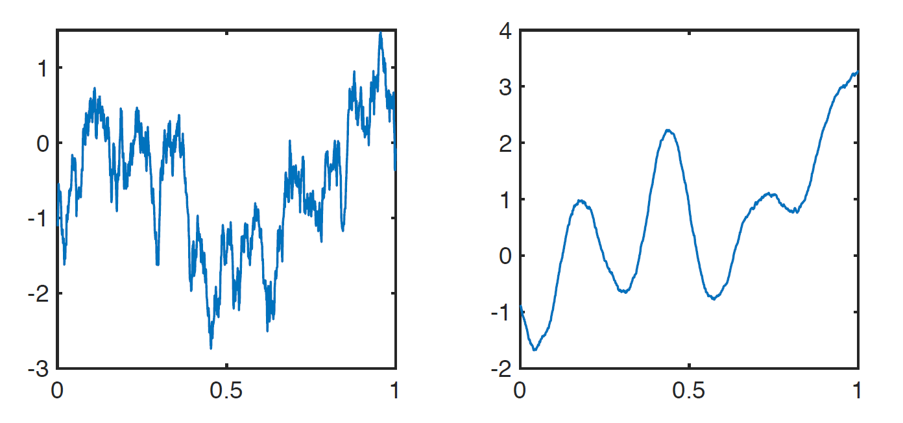
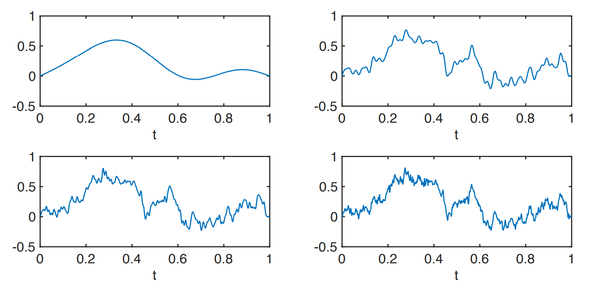
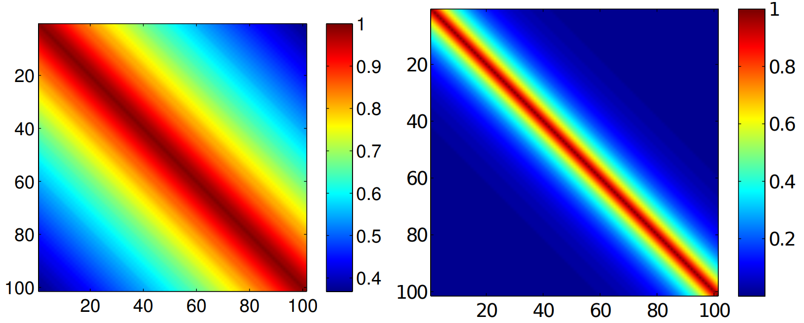
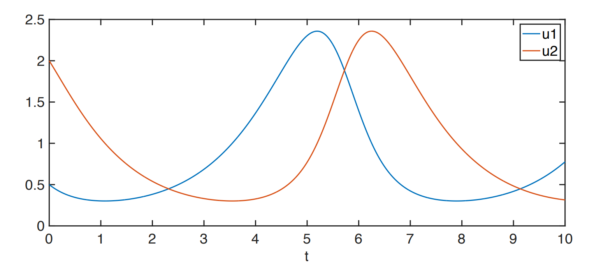
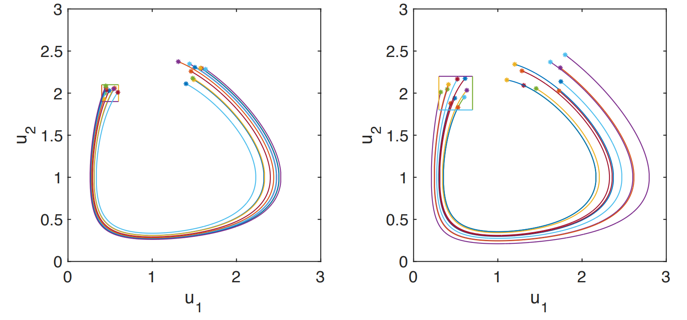

Definition 1 (Probability space). A probability space contains 3 components \[(\varOmega, \mathcal F, \mathbf{P}).\]
\(\varOmega\): a sample space (a set)
\(\mathcal F\): a \(\sigma\)-algebra (a collection of subsets of \(\varOmega\))
\(\mathbf{P}\): a (probability) measure
Definition 2 (Real-valued random variable). A random variable \(X\) is a function which defines on the probability space. \[X:\varOmega\to \mathbf{R}.\]
Example 3. Some real-valued random variable examples: \[X\sim N(0,1)\ \text{(Normal)}, \quad X\sim U(-1,1)\ \text{(Uniform)}.\]
Definition 4 (\(\mathbf{R}^N\)-valued random varible). A \(\mathbf{R}^N\)-valued random varible \(\boldsymbol{X}\) is a function \[\boldsymbol{X} :\varOmega\to \mathbf{R}^N \text{ where } \boldsymbol{X} = (X_1,\dots,X_N)^\top.\]
Example 5. \[\boldsymbol{X} \sim N(\boldsymbol{\mu}, C)\ \text{(multivariate Normal)}\]
Definition 6 (Stochastic Process). Let \((\varOmega, \mathcal F,\mathbf{P})\) be a probability space and let \(\mathbf{T}\subset \mathbf{R}\). A real-valued stochastic process \(f(t,\omega)\) can be viewed as
A real-valued function \(f:\mathbf{T}\times \varOmega\to \mathbf{R}\).
A collection of real-valued random variables for each \(t\in \mathbf{T}\) \[\{f(t,\cdot),t\in \mathbf{T}\}.\]
A collection of realisations \[\{f(\cdot,\omega),\omega\in \varOmega\}.\]
\((\star)\) We will write \(f(t,\omega)\) to stress that a stochastic process is a function.
Example 7 (Deterministic ODE). Let \(D=(0,1)\) and consider the following boundary value problem (BVP):
Find \(u:\overline D\to \mathbf{R}\) such that \[-\frac{\mathrm{d}}{\mathrm{d}x}\left({\color{red} a (x)}\frac{\mathrm{d}u(x)}{\mathrm{d}x}\right) = 1,\quad x\in D,\] together with \[u(0)=\alpha,\quad u(1)=\beta.\] This is a simple model of heat diffusion in a wire where
\(x\) denotes spatial position.
\(u(x)\) represents the temperature.
\({\color{red} a (x)}\) is the thermal conductivity (or diffusion coefficient).
If \({\color{red} a =1}\), and \(\alpha=\beta=0\), then \(u(x)= x(1-x)/2\) (analytic solution is available).
Suppose \(a\) is not a simple function of \(x\), but a stochastic process (also known as a random field).
Let \((\varOmega, \mathcal F,\mathbf{R})\) be a probability space, and let \(\boldsymbol{\xi}_1,\xi_2,\dots,\xi_{50}:\varOmega\to \mathbf{R}\) be independent. Now define \[\label{1.1} \begin{aligned} a(x,\omega)=1+\sum_{i=1}^{50} {4\over i^2\pi^2}\cos(i\pi x)\xi_i(\omega),\quad x\in D,\quad \omega\in \varOmega. \end{aligned}\] In particular, suppose \(\xi_1,\xi_2,\dots,\xi_{50}\sim U(-1,1)\). We could then generate \(20\) realisations of \(a(\cdot,\omega_j)\) shown in figure 1 .
Let \((\varOmega,\mathcal F,\mathbf{P})\) be a probability space and let \(D=(0,1)\) (the spatial domain).
Find \(u:\overline{D}\times \varOmega\to \mathbf{R}\) such that \(\mathbf{P}\)-a.s, \[-{\mathrm{d}\over \mathrm{d}x}\left(a(x,{\color{red} \omega }){\mathrm{d}u(x,{\color{red} \omega })\over \mathrm{d}x}\right)=1,\quad x\in D,\] and \[u(0,{\color{red} \omega })=\alpha,\quad u(1,{\color{red} \omega })=\beta.\]
Question 1.
Does a solution \(u(x,\omega)\) exist? Is it unique?
What kind of random input \(a(x,\omega)\) is allowed?
If a solution \(u(x,\omega)\) exist, what are its properties?
What function space does \(u(x,\omega)\) belong to?
Given an input random field \(a(x,\omega)\), estimate statistical quantity of interest associated with \(u(x,\omega)\).
We can use Monte Carlo with FD approximation, to estimate the mean \[\mathop{\mathrm{\mathbf{E}}}[u(x,\omega)]\approx {1\over M}\sum_{j=1}^M u(x,\omega_j)\approx {1\over M}\sum_{j=1}^M u_h^j(x)=: \mu_{M,h}.\] And similarly the variance \[\mathbf{Var}[u(x,\omega)]\approx {1\over M-1}\sum_{j=1}^M(u_h^j(x)-\mu_{M,h})^2.\]
Question 2. How can we generate realisations of the random input \(a(x,\omega)\). (Discussed in section 2)
In UQ1, we met \(\mathbf{R}\)-valued and \(\mathbf{R}^N\)-valued random variables, \[X:\varOmega\to \mathbf{R},\quad \boldsymbol{X}:\varOmega\to \mathbf{R}^N,\] we will make this concept more general.
Definition 8 (Measure Space). Let \(\Psi\) be a set with a \(\sigma\)-algebra \(\mathcal G\). We call \((\Psi,\mathcal G)\) a measurable space and each \(G\in \mathcal G\) is a measurable set.
Given a measure \(\pi\) on \((\Psi, \mathcal G)\), we call \((\Psi, \mathcal G, \pi)\) a measure space.
Example 9. A probability space \((\varOmega,\mathcal F,\mathbf{P})\) is a measure space, with \[\mathbf{P}(\varOmega)=1.\]
Definition 10 (Borel sigma-algebra). The Borel sigma-algebra \(\mathcal B(D)\) is defined to be the smallest sigma-algebra containing all open subsets of \(D\).
Example 11. Let \(\Psi=D\), where \(D\subset \mathbf{R}\). \((D,\mathcal B(D))\) is a measurable space.
For each \((a,b)\in \mathcal B(D)\), we can assign a ‘size’, using Lebesgue measure, \[{Leb}(a,b)\coloneqq |b-a|.\] and \((D,\mathcal B(D),{Leb})\) is a measure space.
The measure of a Borel-set can be represented as an integral \[{Leb}(a,b)=\int_a^b 1\mathrm{d}{Leb}(x)=\int_a^b1\mathrm{d}x.\]
Definition 12 (Random Variable). Let \((\varOmega, \mathcal F,\mathbf{P})\) be a probability space and let \((\Psi,\mathcal G)\) be a measurable space. \(X:\varOmega\to \Psi\) is a \(\Psi\)-valued random variable, if it is \(\mathcal F\)-measurable. That is, \[\label{} \begin{aligned} \forall G\in \mathcal G \quad X^{-1}(G)=\{\omega\in \varOmega|X(\omega)\in G\}\in \mathcal F. \end{aligned}\]
Definition 13 (Probability distribution). The probability distribution of \(X\) is the measure \(\mathbf{P}_X\) on \((\Psi,\mathcal G)\) defined by \[\mathbf{P}_X(G)\coloneqq \mathbf{P}(X^{-1}(G)),\quad \forall G\in \mathcal G,\] and \((\Psi,\mathcal G,\mathbf{P}_X)\) is also a probability space.
We will only be dealing with random variables where \(\Psi\) is an infinite set like \(\mathbf{R}\), or a set of functions on a spatial domain \(D\).
Measurability is an important concept that allows us to define integration.
For continuous random variables \(X:\varOmega\to \Psi\), \[\label{} \begin{aligned} \mathbf{P}(\{\omega\in \varOmega| X(\omega)\in G\})=\mathbf{P}_X(G)=\int_G 1\mathrm{d}\mathbf{P}_X(x). \end{aligned}\] And the expectation: \[\label{} \begin{aligned} \mathop{\mathrm{\mathbf{E}}}[X]\coloneqq \int_\varOmega X(\omega)\mathrm{d}\mathbf{P}(\omega)=\int_\Psi x\ \mathrm{d}\mathbf{P}_X(x). \end{aligned}\]
If we know the probability density function \(\rho(x)\) associated with \(\mathbf{P}_X\), we can re-write the integrals w.r.t. \(\mathbf{P}_X\) as standard integrals w.r.t. Lebesgue measure.
Probability from equation [1.3]: \[\label{} \begin{aligned} \mathbf{P}(\{\omega\in \varOmega| a<X(\omega)<b\})=\mathbf{P}_X(a,b)=\int_a^b 1{\color{red} \mathrm{d} \mathbf{P}_X(x)}=\int_a^b{\color{red} \rho (x)\mathrm{d}x}. \end{aligned}\]
Expectation from equation [1.4] \[\label{1.6} \begin{aligned} \mathop{\mathrm{\mathbf{E}}}[X]\coloneqq \int_\varOmega X(\omega)\mathrm{d}\mathbf{P}(\omega)=\int_\mathbf{R}x\ {\color{red} \mathrm{d} \mathbf{P}_X(x)}=\int_\mathbf{R}x{\color{red} \rho (x)\mathrm{d}x}. \end{aligned}\]
Definition 14 (Random Field). Let \((\varOmega,\mathcal F,\mathbf{P})\) be a probability space and let \(D\subset \mathbf{R}^d\). A real-valued random field \(u:D\times \varOmega\to \mathbf{R}\) is a real-valued random variable for each \(\boldsymbol{x}\in D\).
If \(d=1\) and \(D\in \mathbf{R}\), then we call a random field (RF) a stochastic process.
Three interpretations:
A real-valued function \(u:D\times \varOmega\to \mathbf{R}\).
A collection of real-valued random variables for each \(\boldsymbol{x} \in D\) \[\{u(\boldsymbol{x},\cdot),\ \boldsymbol{x}\in D\}.\]
A collection of realisations \(\{u(\cdot,\omega),\omega\in \varOmega\}\).
Example 15 (\(d=1\)). Let \(D=[0,2\pi]\) and consider \[a(x,\omega)=\cos(x)\xi_1(\omega)+\sin(x)\xi_2(\omega),\quad x\in D,\quad \xi_1,\xi_2\sim N(0,1)\ {iid}.\]
Question 3. What kind of functions are the realisations?
Realisations of the RF in this example are continuous functions of \(x\in D\). They are also differentiable. This is not true in general! (Brownian motion).
We will work with RFs with realisations which are at least square-integrable.
Definition 16 (\(L^2(D)\) space). Let \(D\subset \mathbf{R}^d\). \(L^2(D)\) is the set of Borel-measurable functions \(u:D\to \mathbf{R}\) such that \[\label{1.7} \begin{aligned} \|u\|_{L^2(D)}\coloneqq \left(\int_D|u(\boldsymbol{x})|^2\mathrm{d}\boldsymbol{x} \right)^{1/2} <\infty. \end{aligned}\] This is a Hilbert Space, which is equipped with an inner-product \[\label{1.8} \begin{aligned} \langle{u,v}\rangle\coloneqq \int_Du(\boldsymbol{x})v(\boldsymbol{x})\mathrm{d}\boldsymbol{x}, \end{aligned}\] where \(\|u\|_{L^2(D)}=\sqrt{\langle{u,u}\rangle}\).
Example 17 (Example [example:1.15] revisit). Let \(D=[0,2\pi]\) and consider \[a(x,\omega)=\cos(x)\xi_1(\omega)+\sin(x)\xi_2(\omega),\quad x\in D,\quad \xi_1,\xi_2\sim N(0,1)\ {iid}.\] For each \(x\in D\), \(a(x,\cdot)\) is a random variable. For any \(x\in D\), \[\label{1.9} \begin{aligned} \mathop{\mathrm{\mathbf{E}}}[a(x,\cdot)]=\cos(x)\mathop{\mathrm{\mathbf{E}}}[\xi_1]+\sin(x)\mathop{\mathrm{\mathbf{E}}}[\xi_2]=0+0=0, \end{aligned}\] so it \(a(x,\omega)\) clearly mean zero.
Definition 18 (\(L^2(\varOmega)\) space). Let \((\varOmega,\mathcal F,\mathbf{P})\) be a probability space. \(L^2(\varOmega)\) is the set of \(\mathcal F\)-measurable functions \(X:\varOmega\to \mathbf{R}\) (i.e., real-valued random variables) such that \[\label{1.10} \begin{aligned} \|X\|_{L^2(\varOmega)}\coloneqq \mathop{\mathrm{\mathbf{E}}}[X^2]^{1/2} < \infty. \end{aligned}\] This is also a Hilbert Space, which is equipped with the inner-product \[\langle{X,Y}\rangle\coloneqq \mathop{\mathrm{\mathbf{E}}}[XY].\]
Recall that \[\label{1.12} \begin{aligned} \mathop{\mathrm{\mathbf{E}}}[X^2]\coloneqq \int_\varOmega X(\omega)^2\mathrm{d}\mathbf{P}(\omega)=\int_\mathbf{R}x^2 \mathrm{d}\mathbf{P}_X(x) = \int_\mathbf{R}x^2 \rho(x)\mathrm{d}x. \end{aligned}\]
Random variables in \(L^2(\varOmega)\) have finite second moment.
Definition 19 (Second-Order RF). Let \((\varOmega,\mathcal F,\mathbf{P})\) be a probability space and let \(D\subset \mathbf{R}^d\). A real-valued RF \(a(\boldsymbol{x},\omega)\) is second order if \(a(\boldsymbol{x},\cdot)\in L^2(\varOmega)\quad \forall \boldsymbol{x}\in D\).
Such RFs have well-defined mean and covariance functions.
The mean function \(\mu:D\to \mathbf{R}\) is defined by \[\label{1.13} \begin{aligned} \mu(\boldsymbol{x})\coloneqq \mathop{\mathrm{\mathbf{E}}}[a(\boldsymbol{x},\omega)]=\int_\varOmega a(\boldsymbol{x},\omega)\mathrm{d}\mathbf{P}(\omega). \end{aligned}\]
The covariance function \(C:D\times D \to \mathbf{R}\) is defined by \[\label{1.14} \begin{aligned} C(\boldsymbol{x},\boldsymbol{y})\coloneqq \mathop{\mathrm{Cov}}(a(\boldsymbol{x},\omega),a(\boldsymbol{y},\omega)),\quad \boldsymbol{x},\boldsymbol{y}\in D. \end{aligned}\]
Using the definition of covariance \[\label{1.15} \begin{aligned} C(\boldsymbol{x},\boldsymbol{y})=\mathop{\mathrm{\mathbf{E}}}[(a(\boldsymbol{x},\omega)-\mu(\boldsymbol{x}))(a(\boldsymbol{y},\omega)-\mu(\boldsymbol{y}))]. \end{aligned}\]
Given the covariance function \(C(\boldsymbol{x},\boldsymbol{y})\), the variance of a RF is \[\label{1.16} \begin{aligned} \mathbf{Var}[a(\boldsymbol{x},\omega)]\coloneqq C(\boldsymbol{x},\boldsymbol{x})=\mathop{\mathrm{\mathbf{E}}}[(a(\boldsymbol{x},\omega)-\mu(\boldsymbol{x}))^2]. \end{aligned}\]
I mportant: Not all functions \(C(\boldsymbol{x},\boldsymbol{y})\) are valid covariance functions.
Theorem 20 (Covariance Functions). Let \(D\in \mathbf{R}^d\) and let \(a(\boldsymbol{x},\omega)\) be a second-order RF. The covariance function \(C:D\times D\to \mathbf{R}\) is symmetric,i.e., \[C(\boldsymbol{x},\boldsymbol{y})=C(\boldsymbol{y},\boldsymbol{x})\quad \boldsymbol{x},\boldsymbol{y}\in D\] and non-negative definite. That is, for any \(N\in \mathbf{N}\) and any constants \(\alpha_1,\dots,\alpha_N\in \mathbf{R}\), and any points \(\boldsymbol{x}_1,\dots,\boldsymbol{x}_N\in D\), \[\sum_{i=1}^N\sum_{j=1}^N\alpha_iC(\boldsymbol{x}_i,\boldsymbol{x}_j)\alpha_j\geq 0.\]
Example 21 (Covariance Functions). Often, \(C(\boldsymbol{x},\boldsymbol{y})\) is a function of the distance between a pair of points \(\boldsymbol{x},\boldsymbol{y}\in D\).
Some examples for one-dimensional domains \(D\subset \mathbf{R}\):
The exponential covariance function is \[C(x,y)=\sigma^2 \exp\left({-|x-y|\over \ell}\right)\] Here, \(C(x,x)=\sigma^2\) is the (constant) variance and \(\ell\) is the correlation length.
The Gaussian covariance function (\(d=1\)) is \[C(x,y)=\sigma^2 \exp\left(-|x-y|^2 \over \ell\right).\]
The smoothness of the realisations of a RF depends on the smoothness of the covariance function.

To specify a RF, it is not enough to specify the domain \(D\), the mean function \(\mu(\boldsymbol{x})\) and covariance function \(C(\boldsymbol{x},\boldsymbol{y})\). We also have to specify the probability distribution.
Definition 22 (Gaussian RF). Let \((\varOmega,\mathcal F,\mathbf{P})\) be a probability space and let \(D\subset \mathbf{R}^d\). A real-vallued RF \(a(\boldsymbol{x},\omega)\) with mean \(\mu(\boldsymbol{x})\) and covariance \(C(\boldsymbol{x},\boldsymbol{y})\) is Gaussian if \(\forall \boldsymbol{x}_1,\dots, \boldsymbol{x}_N\in D\) (for any \(N\in \mathbf{N}\)), \[\boldsymbol{a}(\omega)=[a(\boldsymbol{x}_1,\omega),\dots,a(\boldsymbol{x}_N,\omega)]^\top\sim N(\boldsymbol{\mu},C_N)\] (i.e., multivariate Normal) with mean vector \[\boldsymbol{\mu }\in \mathbf{R}^N, \quad [\boldsymbol{\mu}]_i=\mu(\boldsymbol{x}_i),\quad i=1,\dots,N,\] and covariance matrix \[C_N\in \mathbf{R}^{N\times N}, \quad [C_N]_{i,j}=C(\boldsymbol{x}_i,\boldsymbol{x}_j),\quad i,j=1,\dots,N.\]
Example 23 (Brownian motion). Some Gaussian RFs have special name.
Let \(\mathbf{T}\subset \mathbf{R}^+\). Brownian Motion \(W:\mathbf{T}\times \varOmega\to \mathbf{R}\) is a Gaussian stochastic process \(W(t,\omega)\) with continuous realisations with \[\mu(t)=0,\quad C(s,t)=\min\{s,t\}.\]
Example 24 (Brownian Bridge). The Brownian Bridge is a version of Brownian motion on a bounded domain that also satisfies boundary conditions.
Let \(\mathbf{T}=[0,1]\). The Brownian Bridge \(B:\mathbf{T}\times \varOmega\to \mathbf{R}\) is a Gaussian stochastic process \(B(t,\omega)\) satisfying \[B(0,\omega)=0,\quad B(1,\omega)=0\] almost surely, with \[\mu(t)=0,\quad C(s,t)=\min\{s,t\}-st.\]
We previously defined the space \(L^2(D)\) of square-integrable functions \(u:D\to \mathbf{R}\).
Definition 25 (\(L^2(D\times D)\) space). Let \(D\in \mathbf{R}^d\). A function \(G:D\times D\to \mathbf{R}\) belongs to \(L^2(D\times D)\) if \[\label{1.17} \begin{aligned} \|G\|_{L^2(D\times D)}\coloneqq \left(\int_D\int_D G(\boldsymbol{x},\boldsymbol{y})^2\mathrm{d}\boldsymbol{x}\mathrm{d}\boldsymbol{y}\right)^{1/2}<\infty. \end{aligned}\]
Definition 26 (Integral Operator with Kernel \(G\)). Let \(D\subset \mathbf{R}^d\). Given a ‘kernel’ \(G\in L^2(D\times D)\), the integral operator \(\mathcal L:L^2(D)\to L^2(D)\) associated with \(G\) is defined by \[\label{1.18} \begin{aligned} \mathcal Lf(\boldsymbol{x})\coloneqq \int_D G(\boldsymbol{x},\boldsymbol{y})f(\boldsymbol{y})\mathrm{d}\boldsymbol{y},\quad f\in L^2(D). \end{aligned}\] Such operators are: bounded, linear and compact on \(L^2(D)\).
Let \(H=L^2(D)\).
Definition 27 (Linear operator). We say \(\mathcal L:H\to H\) is linear on \(H\) if
\(\mathcal L(f+g)=\mathcal L(f)+\mathcal L(g),\quad \forall f,g\in H\)
\(\mathcal L(\alpha f)=\alpha \mathcal L(f),\quad \forall \alpha\in \mathbf{R}\) and \(\forall f\in H\).
Definition 28 (Bounded operator). We say \(\mathcal L:H\to H\) is bounded on \(H\) if there exist a constant \(K>0\) such that \[\|\mathcal L f\|_H\leq K\|f\|_H,\quad \forall f\in H.\]
Theorem 29 (Symmetric operator). If the kernel \(G\) is s ymmetric \[G(\boldsymbol{x},\boldsymbol{y})=G(\boldsymbol{y},\boldsymbol{x}),\quad \boldsymbol{x},\boldsymbol{y}\in D,\] then the operator \(\mathcal L\) in definition 26 is also s ymmetric, i.e., \[\langle{\mathcal Lf,g}\rangle=\langle{f,\mathcal Lg}\rangle,\quad \forall f,g\in L^2(D),\] where \(\langle{\cdot,\cdot}\rangle\) is the inner-product on \(L^2(D)\).
Recall 1. Covariance functions \(C(\boldsymbol{x},\boldsymbol{y})\) are always s ymmetric. Given a covariance function \(C(\boldsymbol{x},\boldsymbol{y})\) that belongs to \(L^2(D\times D)\), we can use definition 26 to construct an integral operator \[\mathcal C:L^2(D)\to L^2(D)\] through the relation \[\mathcal Cf(\boldsymbol{x})\coloneqq \int_D C(\boldsymbol{x},\boldsymbol{y})f(\boldsymbol{y})\mathrm{d}\boldsymbol{y}, \quad f\in L^2(D),\] this is linear, bounded, compact and symmetric.
There are infinitely many eigenvalues \(\lambda\) and eigenfunctions \(\phi(\neq 0)\) satisfying \[\mathcal C\phi(\boldsymbol{x})=\lambda \phi(\boldsymbol{x}).\] Using the definition of \(\mathcal C\), we have \[\int_D C(\boldsymbol{x},\boldsymbol{y})\phi(\boldsymbol{y})\mathrm{d}\boldsymbol{y}=\lambda \phi(\boldsymbol{x}).\]
Example 30 (Brownian Bridge). Let \(\mathbf{T}=[0,1]\). Recall that the Brownian Bridge \(B:\mathbf{T}\times \varOmega\to \mathbf{R}\) is Gaussian stochastic process with covariance function \[C(s,t)=\min\{s,t\}-st.\] The associated integral operator is defined via \[\mathcal Cf(t)\coloneqq \int_0^1 C(s,t)f(s)\mathrm{d}s= \int _0^1 (\min\{s,t\}-st)f(s)\mathrm{d}s,\quad f\in L^2(\mathbf{T}).\]
The associated eigenvalues and eigenfunctions satisfies \(\mathcal C\phi(t)=\lambda\phi(t)\), or \[\label{1.19} \begin{aligned} \int_0^1(\min\{s,t\}-st)\phi(s)=\lambda\phi(t). \end{aligned}\] Notice that \[\label{1.20} \begin{aligned} \mathcal Cf(t)= \int _0^1 (\min\{s,t\}-st)f(s)\mathrm{d}s&=\int_0^t(s-st)f(s)\mathrm{d}s + \int_t^1(t-st)f(s)\mathrm{d}s\\ &=(1-t)\int_0^tsf(s)\mathrm{d}s+t\int_t^1 (1-s)f(s)\mathrm{d}s. \end{aligned}\] Thus the eigenfunction \(\phi\) and eigenvalues \(\lambda\) can be determined by solving \[(1-t)\int_0^ts\phi(s)\mathrm{d}s+t\int_t^1 (1-s)\phi(s)\mathrm{d}s=\lambda \phi(t)\] Notice that \(\phi(0)=0,\phi(1)=0\). Differentiate w.r.t. \(t\), we have \[\label{1.21} \begin{aligned} t\phi(t)-t^2\phi(t)-\int_0^ts\phi(s)\mathrm{d}s + \int_t^1(1-s)&\phi(s)\mathrm{d}s-t(1-t)\phi(t)=\lambda \phi'(t)\\ -\int_0^t s\phi(s)\mathrm{d}s + \int_t^1 (1&-s)\phi(s)\mathrm{d}s=\lambda \phi'(t)\\ -t\phi(t)+(-(1-t)&\phi(t))=\lambda\phi''(t)\\ \lambda \phi''(t)+\phi(t)=0&\\ \phi(t)+{1\over \lambda}\phi(t)=0 &\Leftrightarrow \underbrace{\phi''(t)+\nu \phi(t)=0}_{\text{Second Order ODE with $\nu={1/\lambda}$}} \end{aligned}\] We then have the general solution: \[\phi(t)=A\cos(\omega t)+B\sin(\omega t),\quad \phi(0)=\phi(1)=0.\] This system will gives \[\phi_i(t)=B_i\sin(i\pi t),\quad \lambda_i={1\over \omega^2}={1\over i^2\pi^2}, \quad i\in \mathbf{Z}^+.\] We could normalize this function by acquiring \(\|\phi_i\|_{L^2(0,1)}=1\), and we have \(B_i=\sqrt{2}\).
Theorem 31 (Hilbert-Schmidt Spectral Theorem). Let \(H=L^2(D)\), and \(\mathcal L:H\to H\) be a bounded linear operator that is symmetric and compact. Denote the eigenvalue of \(\mathcal L\) by \(\lambda_i\), ordered such that \(|\lambda_i|\leq |\lambda_{i+1}|\), and denoted the corresponding eigenfunctions be \(\phi_i\in L^2(D)\). Then
The eigenvalues \(\lambda_i\) are real and \(\lambda_i\to 0\) as \(i\to \infty\).
The eigenfunctions \(\phi_j\) can be chosen to form an orthonormal basis for the range of \(\mathcal L\)(\(L^2(D)\)).
For any \(u\in L^2(D)\), \[\mathcal Lu =\sum_{i=1}^\infty \lambda_i \langle{u,\phi_i}\rangle_{L^2(D)}\phi_i.\]
Definition 32 (\(L^2(\varOmega,L^2(D))\) space). Let \((\varOmega,\mathcal F,\mathbf{P})\) be a probability space, and let \(D\in \mathbf{R}^d\). \(L^2(\varOmega,L^2(D))\) is the space of \(L^2(D)\)-valued random variables \(a:\varOmega\to L^2(D)\) satisfying \[\|a\|_{L^2(\varOmega,L^2(D))}\coloneqq \mathop{\mathrm{\mathbf{E}}}[\|a(\boldsymbol{x},\omega)\|_{L^2(D)}^2]^{1/2}\leq \infty.\]
We can interpret such functions as RF: If \(a(\boldsymbol{x},\omega)\in L^2(\varOmega,L^2(D))\).
For each \(\omega\), we have a realisation \(a(\cdot,\omega)\in L^2(D)\).
For each \(\boldsymbol{x}\), we have a random variable \(a(\boldsymbol{x},\cdot)\in L^2(\varOmega)\).
Suppose \(a(\boldsymbol{x},\omega)\in L^2(\varOmega,L^2(D))\). If we know a basis \(\{\phi_i(\boldsymbol{x}),i=1,2,\dots,\}\) for \(L^2(D)\), then any realisation of \(a(\boldsymbol{x},\omega)\) can be represented as a linear combination of those functions \(a(\boldsymbol{x},\omega)=\sum_{i=1}^\infty a_i(\omega)\phi_i(\boldsymbol{x})\), where the coefficients are random variables. The KL expansion uses the eigenfunctions \(\phi_i\) of the integral operator associated with the covariance function as the chosen basis.
Theorem 33 (Karhuren-Loève expansion). Suppose \(a(\boldsymbol{x},\omega)\in L^2(\varOmega,L^2(D))\). Then \[\label{eq:KLE} \begin{aligned} a(\boldsymbol{x},\omega)=\underbrace{\mu(\boldsymbol{x})}_{\text{Not random}}+\sum_{i=1}^\infty \sqrt{\lambda_i}\underbrace{\xi_i(\omega)}_{\text{Random variables}}\phi_i(\boldsymbol{x}). \end{aligned}\]
\(\mu(\boldsymbol{x})\) is the mean function.
\(\{\lambda_i,\phi_i(\boldsymbol{x})\}\) are the eigenvalues and normalized eigenfunctions of the integal operator \(\mathcal C\) associated with the covariance function where \(\lambda_1\geq \lambda_2\geq \cdots\geq 0\).
The random variables are \[\xi(\omega)\coloneqq {1\over \sqrt{\lambda_i}}\langle{a(\boldsymbol{x},\omega)-\mu(\boldsymbol{x}),\phi_i(\boldsymbol{x})}\rangle,\] and they have mean zero, variance one, and are uncorrelated.
The series converges in the \(L^2(\varOmega,L^2(D))\) sense.
Remark 34. The distribution of the random variables \(\xi_i\) appearing in KL expansion depends on the distribution of the RF \(a(\boldsymbol{x},\omega)\).
If \(a(\boldsymbol{x},\omega)\) is a Gaussian RF, then the \(\xi_i\) are also Gaussian.
Uncorrelated Gaussian random variables are independent.
Note that the function in \(L^2(D)\) does not need to be continuous. When we write \(a(\boldsymbol{x},\omega)=\mu(\boldsymbol{x})+\sum_{i=1}^\infty \sqrt{\lambda_i}\xi_i(\omega)\phi_i(\boldsymbol{x})\), this does not mean that the series converges to \(a(\boldsymbol{x} ,\omega)\) for all \(\boldsymbol{x}\in D\). But we could have converges in ‘the \(L^2(\varOmega,L^2(D))\) sense’, which means that if we define \[a_J(\boldsymbol{x},\omega)\coloneqq \mu(\boldsymbol{x})+\sum_{i=1}^J\sqrt{\lambda_i}\xi_i(\omega)\phi_i(\boldsymbol{x}),\] then \[\|a(\boldsymbol{x},\omega)-a_J(\boldsymbol{x},\omega)\|_{L^2(\varOmega,L^2(D))}\to 0 \quad \text{as}\quad J\to \infty.\]
What we defined previously \[a_J(\boldsymbol{x},\omega)\coloneqq \mu(\boldsymbol{x})+\sum_{i=1}^J\sqrt{\lambda_i}\xi_i(\omega)\phi_i(\boldsymbol{x}),\] is the truncated expansion which is often used as an approximation to do numerical approximations.
Example 35 (Browinan Bridge). Let \(\mathbf{T}=[0,1]\), recall that the Browian Bridge \(B:\mathbf{T}\times \varOmega\to \mathbf{R}\) is a Gaussian RF (stochastic process) with \(\mu(t)=0,\ C(s,t)=\min\{s,t\}-st\). The eigenvalues and normalised eigenfunctions of the integral operator are \[\lambda_i={1\over i^2\pi^2},\quad \phi_i(t)=\sqrt{2}\sin(i\pi t),\quad i=1,2,\dots.\] Using the definition of KL expansion: \[B(t,\omega)=\sum_{i=1}^\infty {\sqrt{2}\over i\pi}\xi_i(\omega)\sin(i\pi t),\quad \xi_i\sim N(0,1) iid.\] we could define the truncated KL expansion for \(B(t,\omega)\), \[B_J(t,\omega)=\sum_{i=1}^J {\sqrt{2}\over i\pi}\xi_i(\omega)\sin(i\pi t),\quad \xi_i\sim N(0,1) iid.\] From figure 35, we could see the series is converging.

Theorem 36. If \(a(\boldsymbol{x},\omega)\in L^2(\varOmega,L^2(D))\), and \(a_J(\boldsymbol{x},\omega)\) is the truncated approximation to \(a(\boldsymbol{x},\omega)\). Then \[\mathop{\mathrm{\mathbf{E}}}[\|a(\boldsymbol{x},\omega)-a_J(\boldsymbol{x},\omega)\|^2_{L^2(D)}]=\sum_{i=J+1}^\infty \lambda_i\]
Theorem 37 (Mercer’s Theorem). Let \(a(\boldsymbol{x},\omega)\in L^2(\varOmega,L^2(D))\) be a second-order RF with KL expansion: \[a(\boldsymbol{x},\omega)=\mu(\boldsymbol{x})+\sum_{i=1}^\infty \sqrt{\lambda_i}\xi_i(\omega)\phi_i(\boldsymbol{x}).\] If \(D\subset \mathbf{R}^d\) is bounded and closed and if \(C(\boldsymbol{x},\boldsymbol{y})\) is continuous, then
The eigenfunctions \(\phi_i(\boldsymbol{x})\) are continuous.
The covariance function can be expressed as \[C(\boldsymbol{x},\boldsymbol{y})=\sum_{i=1}^\infty \lambda_i\phi_i(\boldsymbol{x})\phi_j(\boldsymbol{y})\] where the series converges uniformly. That is : \[\|C-\widehat C\|_\infty = \sup_{\boldsymbol{x},\boldsymbol{y} \in D}|C(\boldsymbol{x},\boldsymbol{y})-\widehat C(\boldsymbol{x},\boldsymbol{y})|\to 0,\quad \text{as }\ J\to \infty,\] where \(\widehat C(\boldsymbol{x},\boldsymbol{y})\) is the truncated convariance function approximation.
It can be shown that \(\widehat C(\boldsymbol{x},\boldsymbol{y})\) is covariance function of the truncated RF \[a_J(\boldsymbol{x},\omega)=\mu(\boldsymbol{x})+\sum_{i=1}^J \sqrt{\lambda_i}\xi_i(\omega)\phi_i(\boldsymbol{x}).\] Using this and the Mercer’s theorem, gives for any \(\boldsymbol{x}\in D\), \[\label{1.23} \begin{aligned} \mathbf{Var}[a(\boldsymbol{x},\omega)]=C(\boldsymbol{x},\boldsymbol{x})=\sum_{i=1}^\infty \lambda_i\phi_i(\boldsymbol{x})^2\\ \mathbf{Var}[a_J(\boldsymbol{x},\omega)]=\widehat C(\boldsymbol{x},\boldsymbol{x})=\sum_{i=1}^J \lambda_i \phi_i(\boldsymbol{x})^2 \end{aligned}\] Hence \[\mathbf{Var}[a(\boldsymbol{x},\omega)]-\mathbf{Var}[a_J(\boldsymbol{x},\omega)]=\sum_{i=J+1}^\infty \lambda_i \phi_i(\boldsymbol{x})^2 \geq 0 \to \mathbf{Var}[a(\boldsymbol{x},\omega)]\geq \mathbf{Var}[a_J(\boldsymbol{x},\omega)].\] We always underestimate the variance.
We could define \[\label{1.24} \begin{aligned} E_J\coloneqq {\int_D \mathbf{Var}[a(\boldsymbol{x},\omega)-a_J(\boldsymbol{x},\omega)]\mathrm{d}\boldsymbol{x}\over \int _D \mathbf{Var}[a(\boldsymbol{x},\omega)]\mathrm{d}\boldsymbol{x} } \end{aligned}\] If the RF has constant variance \(\mathbf{Var}[a(\boldsymbol{x},\omega)]=\sigma^2\), then we have \[E_J\coloneqq {\sigma^2 |D| - \sum_{i=1}^J\lambda_i\over \sigma^2 |D|,}\] which is computable. If we know the eigenvalues, we can find \(J\) such that \(E_J\leq \texttt{tol}\).
Recall 2. The KL expansion of a random field \(a:D\times \varOmega\to \mathbf{R}\) is \[a(\boldsymbol{x},\omega)=\mu(\boldsymbol{x})+\sum_{i=1}^\infty \sqrt{\lambda_i}\xi_i(\omega)\phi_i(\boldsymbol{x})\] this is a function of \(\boldsymbol{x}\in D\).
Key Point. When solving ODEs/PDEs with RFs inputs numerically, we often only need access to samples at a finite set of grid points \(x_1,x_2,\dots,x_N\). (see example 38)
Example 38. Let \(D=(0,1)\), find \(u:\overline D\to \mathbf{R}\) such that \[-{\mathrm{d}\over \mathrm{d}x}(a(x) {\mathrm{d}u(x)\over \mathrm{d}x} )=1\quad x\in D.\] with \(u(0)=u(1)=0\). We could approximate the solution using a finite difference method.
Divide the interval \([0, 1]\) into \(N\) subintervals (or elements) of width \(h = 1/N\) and label the vertices of these elements as \(x_0, x_1,...,x_N\). Then we have \[-\frac{d}{d x}(a\left(x_{i}\right) \frac{d u\left(x_{i}\right)}{d x})=1, \quad i=1, \ldots, N-1 \label{eq:2.1}\] with \(u(x_0)=u(x_N)=0\).
Using a centered finite difference scheme: \[{\mathrm{d}u\over \mathrm{d}x}(x_i)\approx {u(x_i + {h\over 2})-u(x_i-{h\over 2})\over h}={u(x_{i+{1/2}})-u(x_{i-{1/2}})\over h}\] where \(x_{i+1 / 2}\) is the midpoint of \(\left[x_{i}, x_{i+1}\right]\) and similarly for \(x_{i-1 / 2}\). Approximating the derivatives in [eq:2.1] in this way and replacing \(u\left(x_{i}\right)\) by \(U_{i}\), where \(U_{i}\) denotes the resulting approximation to \(u\left(x_{i}\right)\) gives a linear system of \(N-1\) equations \[-\left(\frac{a\left(x_{i-1 / 2}\right)}{h^{2}}\right) U_{i-1}+\left(\frac{a\left(x_{i-1 / 2}\right)+a\left(x_{i+1 / 2}\right)}{h^{2}}\right) U_{i}-\left(\frac{a\left(x_{i+1 / 2}\right)}{h^{2}}\right) U_{i+1}=1\] for \(i=1, \ldots, N-1\), together with \(U_{0}=0\) and \(U_{N}=0\). If we consider a stochastic model where \(a(x, \omega)\) is a stochastic process, then to perform a Monte Carlo simulation, we will need to generate samples of the random vector \[\mathbf{a}(\omega)=\left[a\left(x_{1 / 2}, \omega\right), a\left(x_{3 / 2}, \omega\right), \ldots,, a\left(x_{N-(1 / 2)}, \omega\right)\right]^\top\] corresponding to \(a(x, \omega)\) evaluated at the mid-points of the elements in the grid.
Let \(D\subset \mathbf{R}^d\) be a domain (\(d=1,2\)), and let \(z(\boldsymbol{x},\omega)\) be an associated second-order RF with mean function \(\mu(\boldsymbol{x})\) and covariance function \(C(\boldsymbol{x},\boldsymbol{y})\).
Let \(N\in \mathbf{N}\), for any \(\boldsymbol{x}_1,\boldsymbol{x}_2,\dots,\boldsymbol{x}_N\in D\), we can define \[\boldsymbol{Z}(\omega)\coloneqq [z(\boldsymbol{x}_1,\omega),z(\boldsymbol{x}_2,\omega),\dots,z(\boldsymbol{x}_N,\omega)]^\top\] This is an \(\mathbf{R}^N\)-valued random variable \(\boldsymbol{Z}:\varOmega\to \mathbf{R}^N\).
It has mean vector \[\boldsymbol{\mu}\coloneqq \mathop{\mathrm{\mathbf{E}}}[\boldsymbol{Z}],\text{ where } [\mu]_i=\mu(\boldsymbol{x}_i),\quad i=1,2,\dots,N.\]
It has Covariance matrix \[C_N\coloneqq \mathop{\mathrm{\mathbf{E}}}[(\boldsymbol{Z}-\boldsymbol{\mu})(\boldsymbol{Z}-\boldsymbol{\mu })^\top]\in \mathbf{R}^{N\times N},\] where entries are \([C_N]_{ij}=C(\boldsymbol{x}_i,\boldsymbol{x}_j)\), \(i,j=1,\dots,N\).
By theorem 20, the \(N\times N\) covariance matrix \(C_N\) of \(\boldsymbol{Z}\) is also symmetric and non-negative definite (or positive semidefinite) matrix, that is \(\boldsymbol{v}^\top C_N \boldsymbol{v} \geq 0\), for all \(\boldsymbol{v}\in \mathbf{R}^N\). From definition 22, we knwo that if \(z(\boldsymbol{x},\omega)\) is a Gaussian RF, then for any \(\boldsymbol{x}_1,\dots,\boldsymbol{x}_N\), \(\boldsymbol{Z}\sim N(\boldsymbol{\mu},C_N)\). That is, \(\boldsymbol{Z}\) is always a multivariate normal random variable. Hence, if we need to generate realisations of a Gaussian RF at a set of grid points, then we only need to generate samples of random vectors \(\boldsymbol{Z}\) with distribution \(\boldsymbol{Z}\sim N(\boldsymbol{\mu}, C_N)\).
Standard approach is to use a matrix fractorisation of \(C_N\). Suppose we can find an \(N\times N\) matrix \(V\) such that \[C_N = V V^\top.\] We can create a sample of \(\boldsymbol{Z}\sim N(\boldsymbol{\mu}, C_N)\) as follows:
Theorem 39 (Matrix Factorization Method).
Generate a sample \(\boldsymbol{\xi }\sim N(\boldsymbol{0},I_N)\), where \(\boldsymbol{\xi}=[\xi_1,\xi_2,\dots,\xi_N]^\top,\ \xi_i\sim N(0,1) \ iid.\)
Factorize \(C_N=VV^\top\).
Form \(\boldsymbol{Z}=\boldsymbol{\mu}+V\boldsymbol{\xi}\), and then \(\boldsymbol{Z} \sim N(\boldsymbol{\mu}, C_N)\).
Theorem 40 (Cholesky factorisation). If \(C_N\) is an \(N\times N\) symmetric and positive definite matrix, i.e., \[\boldsymbol{v}^\top C_N\boldsymbol{v} >0\quad \forall \boldsymbol{v}\in \mathbf{R}^N\setminus\{\boldsymbol{0}\},\] then there exist an \(N\times N\) lower triangular \(L\) such that \[C_N = LL^\top.\]
Potential disadvantages for Cholesky method
If \(C_N\) is not strictly positive definite, or has small eigenvalues very close to zero, then the method can fail.
Since covariance matrices are usually dense, it can be very expensive:
Cost of Cholesky factorisation: \(O(N^3)\),
Cost of Multiplication with \(L\): \(O(N^2)\).
If we need \(M\) samples, then the cost is \[O(N^3)+M\cdot O(N^2)\quad {\text{where $N$ is the number of grid points}}\]
If \(C_N\) is real valued, symmetric and non-negative definite. We can factorise it as \[C_N = U\Lambda U^\top\] where
\(\Lambda\) is the \(N\times N\) diagonal matrix of eigenvalues, ordered such that \[\lambda_1\geq \lambda_2 \geq \cdots \geq \lambda_N \geq 0.\]
\(U\) is a matrix whose columns are eigenvectors \[U=[\boldsymbol{u}_1,\boldsymbol{u}_2,\dots,\boldsymbol{u}_N]\in \mathbf{R}^{N\times N},\] and we assume these are normalised such that \[u_i^\top u_j = \begin{cases} 1 & {\text{if }}i=j \\ 0 & \text{if } i\neq j \end{cases} \quad \Rightarrow U^\top U = I_N.\]
We could then manipulate the factorisation as \[C_N = U\Lambda U^\top= U \Lambda^{1/ 2} \Lambda^{1/2} U^\top= {U\Lambda^{1/ 2}}(U\Lambda^{1/ 2})^\top\] Here \(\Lambda^{1/2}\) is the \(N\times N\) diagonal matrix with diagonal entries, \[\sqrt{\lambda_1},\sqrt{\lambda_2},\dots,\sqrt{\lambda_N}.\] This is well-defined since \(C_N\) is non-negative definite. We can now use matrix factorisation method with \(V= U\Lambda^{1/2}\), and this gives \(\boldsymbol{Z} = \boldsymbol{\mu }+ U \Lambda ^{1/2}\boldsymbol{\xi }\) where \(\boldsymbol{\xi }\sim N(\boldsymbol{0},I_N)\).
Note that \[\boldsymbol{Z} = \boldsymbol{\mu }+ U \Lambda^{1/2}\boldsymbol{\xi }= \boldsymbol{\mu }+ \sum_{i=1}^N \sqrt{\lambda_i}\boldsymbol{u}_i\xi_i.\]
Recall 3. \(N\) is the number of grid points, and if we compare the cost with Cholesky method
The cost of computing \(U\) and \(\Lambda\) is similar to Cholesky, \(O(N^3)\).
The cost of a multiplication with \(V = U\Lambda^{1/2}\) is also \(O(N^2)\).
However, We could make savings if we truncated the sum after \(n< N\) terms.
Important. We assume that \(\lambda_1\leq \dots \leq \lambda_N\). Let \(n\in \mathbf{Z}\) with \(n<N\) and define \[\boldsymbol{\widehat Z} = \boldsymbol{\mu }+ \sum_{i=1}^n\sqrt{\lambda_i}\boldsymbol{u}_i \xi_i,\quad \xi \sim N(0,1),\ iid.\] We can also write \[\boldsymbol{\widehat Z} = \boldsymbol{\mu }+ U_n\Lambda_n^{1/2}\xi_n,\] where \(U_n=[\boldsymbol{u}_1,\dots,\boldsymbol{u}_n]\), \(\Lambda_n = \mathop{\mathrm{diag}}(\lambda_1,\dots,\lambda_n)\), and \(\boldsymbol{\xi}_n = [\xi_1,\dots,\xi_n]^\top\).
Key Question. How good \(\boldsymbol{\widehat Z}\) as an approximation to \(Z\)?
The random vector \(\boldsymbol{\widehat Z}\) is Gaussian but the covariance matrix is not \(C_N\). And it can be shown that \[\boldsymbol{\widehat Z} \sim N(\boldsymbol{\mu},\widehat C_n),\quad \text{where } \widehat C_n = U_n\Lambda_nU_n^\top\] and we have the equality: \[\frac{\|C_{N}-\widehat{C}_{n}\|_{2}}{\left\|C_{N}\right\|_{2}}=\frac{\lambda_{n+1}}{\lambda_{1}}\] And also by considering the mean-square sense: \[\mathop{\mathrm{\mathbf{E}}}[\|\boldsymbol{Z}-\widehat{\boldsymbol{Z}}\|_2^2]=\sum_{i=n+1}^N\lambda_i.\]
Definition 41. A second order RF is called stationary if the mean \(\mu(\boldsymbol{x})\) is a constant and the covariance function \[C(\boldsymbol{x},\boldsymbol{y})=c(\boldsymbol{x} - \boldsymbol{y}),\quad \boldsymbol{x},\boldsymbol{y} \in D\] for some function \(c:D\to \mathbf{R}\) called the stationary covariance.
Example 42. A mean zero RF with exponential covariance function \[C(\boldsymbol{x},\boldsymbol{y}) = \sigma^2 \exp\left(-{\|\boldsymbol{x} - \boldsymbol{y}\|_2\over \ell}\right),\quad \boldsymbol{x},\boldsymbol{y} \in D\subset \mathbf{R}^2\] is stationary since \(C(\boldsymbol{x},\boldsymbol{y}) = c(\boldsymbol{x} - \boldsymbol{y})\) where \[c(\boldsymbol{x}) = \sigma^2\exp\left(-{\|\boldsymbol{x}\|_2\over \ell}\right)\]
Definition 43 (Toeplitz matrix). An \(N\times N\) real-valued matrix \(C\) is toeplitz if the \((i,j)\)th entry \[[C]_{i,j}=c_{i-j}\] for some real numbers \(c_{1-N},\dots,c_{N-1}\) In order words, the toeplitz matrix is constant along the diagonal and off diagonals: \[C= \begin{pmatrix} c_{0} & c_{-1} & \cdots & c_{2-N} & c_{1-N} \\ c_{1} & c_{0} & c_{-1} & \cdots & c_{2-N} \\ \vdots & \ddots & \ddots & \ddots & \vdots \\ c_{N-2} & \ddots & c_{1} & c_{0} & c_{-1} \\ c_{N-1} & c_{N-2} & \cdots & c_{1} & c_{0} \end{pmatrix}\] We only need to store the first column and row to reconstruct the whole toeplitz matrix.
NOTE 1. A symmetric toeplitz matrix is fully defined by its first column. \[\boldsymbol{c}_1 = [c_0,c_1,\dots,c_{N-1}]^\top\in \mathbf{R}^N.\]
Example 44. Let \(D=[0,1]\), and let \(z(x,\omega)\) be a mean-zero Gaussian RF with stationary covariance \[c(x) = e^{-|x|/\ell}.\] Divide \(D\) into \(100\) uniform intervals and choose the grid points \[x_i = {i-1\over 100},\quad i = 1,2,\dots,101.\] The plot of covariance matrix is shown in figure 5.

Definition 45 (Circulant matrix). An \(N\times N\) real-valued Topelitz matrix \(C\) is circulant if each column is a circular (clockwise) shift of the preceding (previous) column. \[C=\begin{pmatrix} c_{0} & c_{N-1} & \cdots & c_{2} & c_{1} \\ c_{1} & c_{0} & c_{N-1} & \cdots & c_{2} \\ \vdots & \ddots & \ddots & \ddots & \vdots \\ c_{N-2} & \ddots & c_{1} & c_{0} & c_{N-1} \\ c_{N-1} & c_{N-2} & \cdots & c_{1} & c_{0} \end{pmatrix}\]
Example 46. Example of Circulant matrix: \[C = \begin{pmatrix} 1 & 4 & 3 & 2\\ 2 & 1 & 4 & 3\\ 3 & 2 & 1 & 4\\ 4 & 3 & 2 & 1 \end{pmatrix}\] is circulant.
Definition 47 (Hermitian vector). A vector \(\boldsymbol{v} = [v_0,v_1,\dots, v_{N-1}]^\top\in \mathbf{C}^N\) is said to be Hermitian if \[v_0 \in \mathbf{R},\quad \text{and } v_j = \overline{v_{N-j}},\quad j = 1,2,\dots,N-1.\]
Remark 48. Again, circulant matrix is uniquely determined by the first column \[\boldsymbol{c}_1 = [c_0,c_1,\dots,c_{N-1}]^\top\in \mathbf{R}^N.\] If the matrix is also symmetric, the first column has a special structure. \[c_i = c_j\ \text{ if }\ i+j=N, \text{ for } i,j=1,2,\dots,N-1.\] i.e., the first column is real Hermitian vector.
Theorem 49 (Topelitz Covariance Matrix). Let \(D=[a,b]\). If
\(z(x,\omega)\) be a stationary stochastic process on \(D\) with stationary covariance function \(c(x)\).
Suppose we evaluate \(z(x,\omega)\) at \(N\) uniformly spaced points \(x_1,\dots,x_N\).
Then the associated covariance matrix \(C_N\) is always Toeplitz.
Proof. (Note the points are labelled \(x_{1}, \ldots, x_{N}\) here). Since the points are uniformly spaced on \([a, b]\), we have \(x_{i}=a+(i-1) h, i=1,2, \ldots, N\), where \(h=(b-a) /(N-1)\). (If there are \(N\) points, there are \(N-1\) intervals). Then \(x_{i}-x_{j}=(i-j) h\). The \((i, j) t h\) entry of the covariance matrix is \[\left[C_{N}\right]_{i, j}=\underbrace{C\left(x_{i}, x_{j}\right)=c\left(x_{i}-x_{j}\right)}_{\text{Stationary covariance function}}=c((i-j) h)\] where \(c(x)\) is the stationary covariance function. Hence \(\left[C_{N}\right]_{i, j}\) is constant for all pairs of point \(x_{i}, x_{j}\) for which \((i-j)\) is constant. This means that \(C_{N}\) is Toeplitz (by definition 43), since all entries along a fixed diagonal have the same value of \(i-j\). ◻
Definition 50 (Discrete Fourier Transform (DFT)). The DFT of a vector \(\boldsymbol{v}\in \mathbf{C}^N\) is the vector \(\widehat{\boldsymbol{v}}\in \mathbf{C}^N\) with entries \[\widehat{v}_k\coloneqq \sum_{j=1}^N v_j\omega^{(k-1)(j-1)},\quad k=1,2,\dots,N.\] where \(\omega\coloneqq e^{-2\pi i/N}\). (This is the \(N\)th unity, and distinguish \(\omega\) with the iid. random normal distribution samples)
Equivalently, we could write the definition as \[\widehat{\boldsymbol{v}}\coloneqq \sqrt{N} W \boldsymbol{v} \in \mathbf{C}^N,\] where \(W\in \mathbf{C}^{N\times N}\) is the Fourier matrix has entries \[_{k,j} = {1\over \sqrt{N}}\omega^{(k-1)(j-1)},\quad k,j = 1,\dots,N.\]
NOTE 2.
The MATLAB command fft(v) will perform a DFT on the
vector \(\boldsymbol{v}\).
This important algorithm will reduce the cost of \((\mathbf{C}^{N\times N} \times \mathbf{C}^N)= O(N^2)\) to \(O(N\log N)\).
Definition 51 (Inverse Discrete Fourier Transform (IDFT)). The IDFT of \(\widehat{\boldsymbol{v}}\in C^N\) is the vector \[\boldsymbol{v}\coloneqq {1\over {\sqrt{N}}}W^*\widehat{\boldsymbol{v}}\in \mathbf{C}^N\] where \(W^*\) is the Hermitian transpose of \(W\). That is, \(W^*\) satisfies \[[W^*]_{k,j}=\overline{W_{j,k}},\quad k,j = 1,2,\dots,N.\]
NOTE 3.
The MATLAB command ifft(v) will perform a IDFT on
the vector \(\boldsymbol{v}\).
This important algorithm will reduce the cost of \((\mathbf{C}^{N\times N} \times \mathbf{C}^N)= O(N^2)\) to \(O(N\log N)\).
The DFT and IDFT of a Hermitian vector is always real-valued.
Theorem 52. Let \(C\in \mathbf{R}^{N\times N}\) be a circulant matrix with first column \(\boldsymbol{c}_1\), then \[C=W\Lambda W^*\]
\(W\in \mathbf{C}^{N\times N}\) is the \(N\times N\) Fourier matrix.
\(\Lambda\) is the \(N\times N\) diagonal matrix of eigenvalues with diagonal entries \[\boldsymbol{d} = \sqrt{N} W^*\boldsymbol{c}_1.\]
We can compute the eigenvalues using the IDFT of \(\boldsymbol{c}_1\) in MATLAB
d=N*ifft(c1).
If \(C\) is symmetric, and circulant, by remark 48, then \(\boldsymbol{c}_1\) is a Hermitian vector, hence \(\boldsymbol{d}\in \mathbf{R}^N\), i.e., the eigenvalues are all real.
If \(C\) is a valid covariance matrix as well as circulant, i.e., the matrix is symmetric, non-negative definite (positive semi-definite), and circulant, then by theorem 52 we have \[\label{2.29} C = W\Lambda W^*= W \Lambda^{1/2}\Lambda^{1/2}W^*= (W\Lambda^{1/2})(W\Lambda^{1/2})^*\]
Problem. Suppose \(C_N\) is \(N\times N\) covariance matrix that is also circulant, then theorem 52 and equation [2.29] give \[C_N = VV^*,\quad \text{where } V\coloneqq W \Lambda^{1/2}.\] If we form \(\boldsymbol{Z} = \boldsymbol{\mu }+ W\Lambda^{1/2}\boldsymbol{\xi}\), where \(\boldsymbol{\xi }\sim N(\boldsymbol{0},I_N)\), what’s the distribution of \(\boldsymbol{Z}\)? \[\label{2.31} \begin{aligned} \mathop{\mathrm{\mathbf{E}}}[\boldsymbol{Z}] &= \boldsymbol{\mu},\\ \mathop{\mathrm{Cov}}[\boldsymbol{Z}] &= \mathop{\mathrm{Cov}}[(\boldsymbol{Z} - \boldsymbol{\mu})(\boldsymbol{Z} - \boldsymbol{\mu })^\top]\\ &=\mathop{\mathrm{Cov}}[W\Lambda^{1/2}\boldsymbol{\xi }\boldsymbol{\xi}^\top\Lambda^{1/2}W^\top]\\ &=W\Lambda^{1/2}\mathop{\mathrm{Cov}}[\boldsymbol{\xi }\boldsymbol{\xi}^\top] \Lambda^{1/2}W^\top\\ &=W\Lambda^{1/2}I_N\Lambda^{1/2}W^\top= W\Lambda W^\top\neq W\Lambda W^*. \end{aligned}\]
Given 2 \(\mathbf{R}^N\)-valued random variables \[\boldsymbol{X}_1,\boldsymbol{X}_2 : \varOmega\to \mathbf{R}^N.\] We can always create a \(\mathbf{C}^N\)-valued random variable via \[\boldsymbol{X} = \boldsymbol{X}_1 + i\boldsymbol{X}_2\] where \(\boldsymbol{X}_1 = \Re(\boldsymbol{X})\), \(\boldsymbol{X}_2 = \Im(\boldsymbol{X})\).
Definition 53 (Complex R.V.s). If \(\boldsymbol{X} = [X_1,X_2,\dots,X_N]^\top\) is a \(\mathbf{C}^N\)-valued r.v., then
The mean vector \(\boldsymbol{\mu }\in \mathbf{C}^N\) where \[_j = \mathop{\mathrm{\mathbf{E}}}[X_j],\quad j = 1,2,\dots, N.\]
The covariance matrix \(C_{\boldsymbol{X}}\in \mathbf{C}^{N\times N}\) where \[C_{\boldsymbol{X}} = \mathop{\mathrm{\mathbf{E}}}[(\boldsymbol{X} - \boldsymbol{\mu})(\boldsymbol{X} - \boldsymbol{\mu})^*]\in \mathbf{C}^{N\times N}\] where \(*\) denotes the Hermitian transpose. That is, \[_{k,j} = \mathop{\mathrm{Cov}}(X_k,X_j) = \mathop{\mathrm{\mathbf{E}}}[(X_k - \mathop{\mathrm{\mathbf{E}}}[X_k])\overline{(X_j - \mathop{\mathrm{\mathbf{E}}}[X_j])}].\]
Example 54. Let \(\boldsymbol{X}_1\), \(\boldsymbol{X}_2\) be \(\mathbf{R}^N\) random variables with mean zero. Define \(\boldsymbol{X} = \boldsymbol{X}_1 + i \boldsymbol{X}_2\). Then \[\label{2.37} \begin{aligned} \mathop{\mathrm{\mathbf{E}}}[\boldsymbol{X}] &= \mathop{\mathrm{\mathbf{E}}}[\boldsymbol{X}_1] + i \mathop{\mathrm{\mathbf{E}}}[\boldsymbol{X}_2] = \boldsymbol{0}\\ C_{\boldsymbol{X}} & = \mathop{\mathrm{\mathbf{E}}}[(\boldsymbol{X} - \mathop{\mathrm{\mathbf{E}}}[\boldsymbol{X}])(\boldsymbol{X} - \mathop{\mathrm{\mathbf{E}}}[\boldsymbol{X}])^*] = \mathop{\mathrm{\mathbf{E}}}[\boldsymbol{X}\boldsymbol{X}^*] \end{aligned}\]
Theorem 55 (Uncorrelated \(\to\) Real-valued). Suppose we have a complex valued random variable \(\boldsymbol{X}\). If \(\Re(\boldsymbol{X})\) and \(\Im(\boldsymbol{X})\) are uncorrelated and mean zero, then the corresponding covariance \(C_{\boldsymbol{X}}\) is \(\mathbf{R}\)-valued.
Proof. For complex valued random variable \(\boldsymbol{X} = \boldsymbol{X}_1 + i \boldsymbol{X}_2\), the covariance matrix is \[\begin{aligned} C_{\boldsymbol{X}} &=\mathop{\mathrm{\mathbf{E}}}\left[\left(\boldsymbol{X}_{1}+i \boldsymbol{X}_{2}\right)\left(\boldsymbol{X}_{1}+i \boldsymbol{X}_{2}\right)^{*}\right]=\mathop{\mathrm{\mathbf{E}}}\left[\left(\boldsymbol{X}_{1}+i \boldsymbol{X}_{2}\right)\left(\boldsymbol{X}_{1}-i \boldsymbol{X}_{2}\right)^{\top}\right] \\ &=\mathop{\mathrm{\mathbf{E}}}\left[\boldsymbol{X}_{1} \boldsymbol{X}_{1}^{\top}+\boldsymbol{X}_{2} \boldsymbol{X}_{2}^{\top}\right]+i \mathop{\mathrm{\mathbf{E}}}\left[-\boldsymbol{X}_{1} \boldsymbol{X}_{2}^{\top}+\boldsymbol{X}_{2} \boldsymbol{X}_{1}^{\top}\right] \end{aligned}\]
Since \(\boldsymbol{X}_{1}\) and \(\boldsymbol{X}_{2}\) are assumed to be uncorrelated, \(\mathop{\mathrm{Cov}}(\boldsymbol{X}_{1}, \boldsymbol{X}_{2})=\mathop{\mathrm{\mathbf{E}}}\left[\boldsymbol{X}_{1} \boldsymbol{X}_{2}^\top\right]=\boldsymbol{0}=\) \(\mathop{\mathrm{\mathbf{E}}}\left[\boldsymbol{X}_{2} \boldsymbol{X}_{1}^\top\right]\). The second term is zero and we have \[C_{\boldsymbol{X}}=\mathop{\mathrm{\mathbf{E}}}\left[\boldsymbol{X}_{1} \boldsymbol{X}_{1}^\top+\boldsymbol{X}_{2} \boldsymbol{X}_{2}^\top\right] = \mathop{\mathrm{\mathbf{E}}}[\boldsymbol{X}_1 \boldsymbol{X}_1^\top] + \mathop{\mathrm{\mathbf{E}}}[\boldsymbol{X}_2 \boldsymbol{X}_2^\top] = \mathop{\mathrm{Cov}}(\boldsymbol{X}_1) + \mathop{\mathrm{Cov}}(\boldsymbol{X}_2),\] which is the sum of the covariance matrices of \(\boldsymbol{X}_{1}\) and \(\boldsymbol{X}_{2}\) and, in particular, is real-valued. ◻
Lemma 56 (Real-valued \(\to\) Uncorrelated). Let \(\boldsymbol{X} = \boldsymbol{X}_1 + i\boldsymbol{X}_2\) where \(\boldsymbol{X}_1\) and \(\boldsymbol{X}_2\) are \(\mathbf{R}^N\)-valued random variables with mean zero.
If \(\mathop{\mathrm{\mathbf{E}}}[\boldsymbol{X} \boldsymbol{X}^*]\) and \(\mathop{\mathrm{\mathbf{E}}}[\boldsymbol{X} \boldsymbol{X}^\top]\) are real-valued, then \(\boldsymbol{X}_1\) and \(\boldsymbol{X}_2\) are uncorrelated.
If in addition, \(\mathop{\mathrm{\mathbf{E}}}[\boldsymbol{X} \boldsymbol{X}^\top]=\boldsymbol{0}\), then the covariance matrices of \(\boldsymbol{X}_1\), and \(\boldsymbol{X}_2\) satisfy \[C_{\boldsymbol{X}_1} = C_{\boldsymbol{X}_2} = {\mathop{\mathrm{\mathbf{E}}}[\boldsymbol{X} \boldsymbol{X}^*]\over 2} = {C_{\boldsymbol{X}}\over 2}.\]
Proof. Let \(\boldsymbol{X} = \boldsymbol{X}_ 1 + i \boldsymbol{X}_ 2\), and we have \(\overline{\boldsymbol{X}} = \boldsymbol{X}_1 - i \boldsymbol{X}_2\). Hence we could rewrite \[\boldsymbol{X}_1 = {\boldsymbol{X} + \overline{\boldsymbol{X}}\over 2},\quad \boldsymbol{X}_2 = {\boldsymbol{X} - \overline{\boldsymbol{X}}\over 2i}\] then we could evaluate \[\label{2.40} \begin{aligned} \mathop{\mathrm{Cov}}(\boldsymbol{X}_1,\boldsymbol{X}_2) &= \mathop{\mathrm{\mathbf{E}}}[\boldsymbol{X}_1 \boldsymbol{X}_2^\top]\\ &={1\over 4i}\mathop{\mathrm{\mathbf{E}}}[(\boldsymbol{X} + \overline{\boldsymbol{X}})(\boldsymbol{X} - \overline{\boldsymbol{X}})^\top]\\ & = {1\over 4i}\mathop{\mathrm{\mathbf{E}}}[\boldsymbol{X}\boldsymbol{X}^\top- \boldsymbol{X} \boldsymbol{X}^*+ \overline{\boldsymbol{X}}\boldsymbol{X} ^\top- \overline{\boldsymbol{X}}\boldsymbol{X}^*]\\ & = {1\over 4i}(\mathop{\mathrm{\mathbf{E}}}[\boldsymbol{X}\boldsymbol{X}^\top] -\mathop{\mathrm{\mathbf{E}}}[ \boldsymbol{X} \boldsymbol{X}^*] + \mathop{\mathrm{\mathbf{E}}}[\overline{\boldsymbol{X}}\boldsymbol{X} ^\top] - \mathop{\mathrm{\mathbf{E}}}[\overline{\boldsymbol{X}}\boldsymbol{X}^*]) \end{aligned}\] By assumptions that \(\mathop{\mathrm{\mathbf{E}}}[\boldsymbol{X}\boldsymbol{X}^*]\) and \(\mathop{\mathrm{\mathbf{E}}}[\boldsymbol{X}\boldsymbol{X}^\top]\) are real valued, then we could have \[\label{2.41} \begin{aligned} \mathop{\mathrm{\mathbf{E}}}[\boldsymbol{X}\boldsymbol{X}^*] &= \overline{\mathop{\mathrm{\mathbf{E}}}[\boldsymbol{X}\boldsymbol{X}^*]} = \mathop{\mathrm{\mathbf{E}}}[\overline{\boldsymbol{X}}\boldsymbol{X}^\top],\\ \mathop{\mathrm{\mathbf{E}}}[\boldsymbol{X}\boldsymbol{X}^\top] &= \overline{\mathop{\mathrm{\mathbf{E}}}[\boldsymbol{X}\boldsymbol{X}^\top]} = \mathop{\mathrm{\mathbf{E}}}[\overline{\boldsymbol{X}}\boldsymbol{X}^*]. \end{aligned}\] then we have the cancellation, and we have \(\mathop{\mathrm{Cov}}(\boldsymbol{X}_1,\boldsymbol{X}_2)=\boldsymbol{0}\) as required.
\[\label{2.42} \begin{aligned} C_{\boldsymbol{X}_1} = \mathop{\mathrm{\mathbf{E}}}[\boldsymbol{X}_1\boldsymbol{X}_1^\top] & = {1\over 4}\mathop{\mathrm{\mathbf{E}}}[(\boldsymbol{X} + \overline{\boldsymbol{X}})(\boldsymbol{X} + \overline{\boldsymbol{X}})^\top]\\ & = {1\over 4} \mathop{\mathrm{\mathbf{E}}}[\boldsymbol{X}\boldsymbol{X} ^\top+ \boldsymbol{X} \boldsymbol{X} ^*+ \overline{\boldsymbol{X}}\boldsymbol{X}^\top+ \overline{\boldsymbol{X}}\boldsymbol{X}^*]\\ & = {1\over 2}\mathop{\mathrm{\mathbf{E}}}[\boldsymbol{X}\boldsymbol{X} ^*] = {C_{\boldsymbol{X}}\over 2}. \quad \substack{\text{By $\mathop{\mathrm{\mathbf{E}}}[\boldsymbol{X}\boldsymbol{X}^\top] =\mathop{\mathrm{\mathbf{E}}}[\overline{\boldsymbol{X}}\boldsymbol{X}^*]= 0$}\\ \text{and equation~\eqref{2.41}}} \end{aligned}\] ◻
Definition 57 (Complex Gaussian Distribution). An \(\mathbf{C}^N\) random variable \(\boldsymbol{X} = \boldsymbol{X}_1 + i \boldsymbol{X}_2\) (\(\boldsymbol{X}_1\) and \(\boldsymbol{X}_2\) are real valued random variables) follows the complex Gaussian distribution \[\boldsymbol{X} \sim CN(\boldsymbol{0},C_{\boldsymbol{X}})\] with real-valued covariance matrix \(C_{\boldsymbol{X}} \in \mathbf{R}^{N\times N}\) if
\(\boldsymbol{X}_1\) and \(\boldsymbol{X}_2\) are independent
\(\boldsymbol{X}_1,\boldsymbol{X}_2 \sim N\left(\boldsymbol{0},{C_{\boldsymbol{X}}\over 2}\right)\).
Example 58. Let \(\boldsymbol{X}_1,\boldsymbol{X}_2 \sim N(\boldsymbol{0},I_N)\) be independent and form \(\boldsymbol{\xi }= \boldsymbol{X}_1 + i \boldsymbol{X}_2\), then we have \[\boldsymbol{\xi }\sim CN(\boldsymbol{0},2I_N).\]
Suppose \(C_N\) is an \(N\times N\) real-valued covariance matrix that is
a valid covariance matrix
circulant
Recall 4 (Usual factorisation method (based on theorem 39)).
Generate a sample of \(\boldsymbol{\xi }\sim N(\boldsymbol{0},I_N)\).
Compute \(\Lambda\) (the eigenvalues of \(C_N\)).
Form \(\boldsymbol{Z} = W\Lambda^{1/2}\boldsymbol{\xi}\).
We will introduce a new method for generating independent samples from \(N(\boldsymbol{0},C_N)\). However, from equation [2.31], we recognize that the method we introduced in theorem 39 will not gives the desired distribution \(N(\boldsymbol{0},C_N)\). In particular, the resulting \(\boldsymbol{Z}\) is complex-valued.
Corollary 59. For circulant symmetric and non-negative definite matrix \(C_N\), we could modify the theorem 39
Generate a sample of \(\boldsymbol{\xi }\sim CN(\boldsymbol{0},2I_N)\).
Compute \(\Lambda\) (the eigenvalues of \(C_N\)).
Form \(\boldsymbol{Z} = W\Lambda^{1/2}\boldsymbol{\xi}\).
Then \(\boldsymbol{Z}\sim CN(\boldsymbol{0},2C_N)\).
Since \(C_N\) is circulant, hence step (2) can be done using IDFT on \(\boldsymbol{c}_1\), and step (3) can be done using DFT. Hence the resulting cost will be \(O(N\log N)\).
Theorem 60. Using the method in corollary 59, we have \[\Re(\boldsymbol{Z}),\Im(\boldsymbol{Z}) \sim N(\boldsymbol{0},C_N) \ \text{ and independent.}\]
Proof. It is easy to see that \(\boldsymbol{Z}\) is a linear transformation of a multivariate Gaussian random variable \(\boldsymbol{\xi}\), hence \(\boldsymbol{Z}\) is a multivariate Gaussian random variable. \[\mathop{\mathrm{\mathbf{E}}}[\boldsymbol{Z}] = W\Lambda^{1/2}\mathop{\mathrm{\mathbf{E}}}[\boldsymbol{\xi}] = \boldsymbol{0}.\] Hence if we define \(\boldsymbol{Z} = \Re(\boldsymbol{Z}) + i \Im(\boldsymbol{Z}) = \boldsymbol{Z}_1 + i \boldsymbol{Z}_2\), then \(\boldsymbol{Z}_1\) and \(\boldsymbol{Z}_2\) both mean \(\boldsymbol{0}\). \[\label{2.46} \begin{aligned} \mathop{\mathrm{\mathbf{E}}}[\boldsymbol{Z}\boldsymbol{Z}^*] &= \mathop{\mathrm{\mathbf{E}}}[W\Lambda^{1/2}\boldsymbol{\xi }\boldsymbol{\xi}^*\Lambda^{1/2}W^*]\\ & = W\Lambda^{1/2}\mathop{\mathrm{\mathbf{E}}}[\boldsymbol{\xi }\boldsymbol{\xi}^*]\Lambda^{1/2}W^*\\ & = 2W\Lambda W^*= 2C_N\in \mathbf{R}^N \end{aligned}\] Since \(\boldsymbol{\xi }\sim CN(\boldsymbol{0},2I_N)\), hence by definition 57 if we write \(\boldsymbol{\xi }= \boldsymbol{\xi}_1 + i \boldsymbol{\xi}_2\), then \(\boldsymbol{\xi}_1\) and \(\boldsymbol{\xi}_2\) are independent (\(\mathop{\mathrm{\mathbf{E}}}[\boldsymbol{\xi}_1\boldsymbol{\xi}_2^\top] = \mathop{\mathrm{\mathbf{E}}}[\boldsymbol{\xi}_2\boldsymbol{\xi}_1^\top]=\boldsymbol{0}\)) and distributed as \(N(\boldsymbol{0},I_N)\). \[\label{2.48} \begin{aligned} \mathop{\mathrm{\mathbf{E}}}[\boldsymbol{Z}\boldsymbol{Z}^\top] & = \mathop{\mathrm{\mathbf{E}}}[W\Lambda^{1/2}\boldsymbol{\xi }\boldsymbol{\xi}^\top\Lambda^{1/2} W^\top]\\ & = W\Lambda^{1/2}\mathop{\mathrm{\mathbf{E}}}[\boldsymbol{\xi }\boldsymbol{\xi}^\top]\Lambda^{1/2}W^\top\\ \mathop{\mathrm{\mathbf{E}}}[\boldsymbol{\xi}\boldsymbol{\xi}^\top] & = \mathop{\mathrm{\mathbf{E}}}[(\boldsymbol{\xi}_1 + i \boldsymbol{\xi}_2)(\boldsymbol{\xi}_1 + i \boldsymbol{\xi}_2)^\top]\\ & = \mathop{\mathrm{\mathbf{E}}}[\boldsymbol{\xi}_1\boldsymbol{\xi}_1^\top] + i \mathop{\mathrm{\mathbf{E}}}[\boldsymbol{\xi}_1\boldsymbol{\xi}_2^\top] + i \mathop{\mathrm{\mathbf{E}}}[\boldsymbol{\xi}_2\boldsymbol{\xi}_1^\top] - \mathop{\mathrm{\mathbf{E}}}[\boldsymbol{\xi}_2 \boldsymbol{\xi}_2^\top] = \boldsymbol{0}\\ \mathop{\mathrm{\mathbf{E}}}[\boldsymbol{Z}\boldsymbol{Z}^\top] & = \boldsymbol{0} \in \mathbf{R}^N. \end{aligned}\] By lemma 56, \(\boldsymbol{Z}_1\) and \(\boldsymbol{Z}_2\) are mean zero, \(\mathop{\mathrm{\mathbf{E}}}[\boldsymbol{Z}\boldsymbol{Z}^*],\mathop{\mathrm{\mathbf{E}}}[\boldsymbol{Z}\boldsymbol{Z} ^\top]\in \mathbf{R}^N\), the we could conclude that \[\boldsymbol{Z}_1,\boldsymbol{Z}_2 \sim N(\boldsymbol{0},C_N),\quad {\text{and independent}}.\] ◻
Recall 5.
Let \(D\subset \mathbf{R}\) and let \(z(x,\omega)\) be a mean-zero Gaussian RF, if
the sample points \(x_1,x_2,\dots,x_N\) are uniformly spaced.
the covariance function is stationary: \(C(x,y) = c(x-y)\).
Then \(\boldsymbol{Z} = [z(x_1,\omega),\dots,z(x_N,\omega)]^\top\sim N(\boldsymbol{0},C_N)\) where \(C_N\) is always T oeplitz (theorem 49).
Any s ymmetric Toeplitz matrix \(C_N\) can be embedded inside a larger s ymmetric circulant matrix \(\widetilde C\) of the form \[{\color{red} \widetilde C} = \left( \begin{array}{c|c} {\color{blue} C _N} & A^\top\\ \hline A & B \end{array} \right)\]
Example 61 (\(N=4\)). For \[C_N = \begin{pmatrix} 5 & 2& 3 & 4 \\ 2 & 5& 2 & 3 \\ 3 & 2 & 5 & 2\\ 4 & 3 & 2 & 5 \end{pmatrix}\] Clearly, this matrix is symmetric and Toeplitz. This can be embedded into a larger s ymmetric circulant matrix. \[{\color{red} \tilde {C}}=\left(\begin{array}{llll|ll} 5 & 2 & 3 & 4 & 3 & 2 \\ 2 & 5 & 2 & 3 & 4 & 3 \\ 3 & 2 & 5 & 2 & 3 & 4 \\ 4 & 3 & 2 & 5 & 2 & 3 \\ \hline 3 & 4 & 3 & 2 & 5 & 2 \\ 2 & 3 & 4 & 3 & 2 & 5 \end{array}\right)\] If we focus on the first column of \(\widetilde C\), \({ \widetilde{\boldsymbol{c}_1}} = [5,2,3,4,3,2]^\top\) which is a Hermitian vector.
Definition 62. Let \(C_N\) be an \(N\times N\) symmetric Toeplitz matrix with first column \[\boldsymbol{c}_1 = [c_0,c_1,\dots,c_{N-2},c_{N-1}]^\top.\] The minimal circulant extension \(\widetilde C\) is the symmetric and circulant matrix of size \(P\times P\) where \(P = 2N - 2\) with first column \[{\widetilde{\boldsymbol{c}_1}}= [c_0,\underbrace{c_1,\dots,c_{N-2}}_{\substack{\text{take this part,}\\ \text{flip the order}}},c_{N-1}| c_{N-2},\dots,c_1]^\top.\]
That is, \[\label{eq:2.55} {\color{red} \widetilde C} = \left( \begin{array}{c|c} {\color{blue} C _N} & A^\top\\ \hline A & B \end{array} \right)\] where \(A\in \mathbf{R}^{(N-2)\times N}\), and \(B\in \mathbf{R}^{(N-2)\times(N-2)}\).
If the extension matrix is a valid covariance matrix, then we can generate samples from \[\widetilde{\boldsymbol{Z}} \sim N(\boldsymbol{0},{\color{red} \widetilde C})\quad {\color{red} \widetilde C}\text{ from equation~\eqref{eq:2.55}}\] using the DFT-method. Such samples have the structure \[{\widetilde{\boldsymbol{Z}}} = \left( \begin{array}{c} \boldsymbol{Z} \\ \hline \boldsymbol{Y} \end{array} \right) \quad \boldsymbol{Z} \in \mathbf{R}^N,\ \boldsymbol{Y} \in \mathbf{R}^{N-2}\] and it can be shown that \(\boldsymbol{Z} \sim N(\boldsymbol{0},{\color{blue} C _N})\).
Proof. Write \(\widetilde{\boldsymbol{Z}}=[\boldsymbol{Z}, \boldsymbol{Y}]^{\top}\) where \(\boldsymbol{Z}\) is the \(\mathbf{R}^{N}\)-valued random variable of interest. If \(\widetilde{\boldsymbol{Z}} \sim N(\boldsymbol{0}, \widetilde{C})\) then clearly \(\boldsymbol{Z}\) has mean vector zero. The covariance matrix of \(\boldsymbol{Z}\) is \(\mathop{\mathrm{\mathbf{E}}}\left[\boldsymbol{Z Z}^\top\right]\) and the covariance matrix of \(\widetilde{\boldsymbol{Z}}\) is \(\widetilde{C}=\mathop{\mathrm{\mathbf{E}}}\left[\widetilde{\boldsymbol{Z}} \widetilde{\boldsymbol{Z}}^\top\right]\). We have \[{\color{red} \widetilde {C}}=\left(\begin{array}{cc} \mathop{\mathrm{\mathbf{E}}}[\boldsymbol{Z} \boldsymbol{Z}^\top] & \mathop{\mathrm{\mathbf{E}}}[\boldsymbol{Z} \boldsymbol{Y}^\top] \\ \mathop{\mathrm{\mathbf{E}}}[\boldsymbol{Y Z}^\top] & \mathop{\mathrm{\mathbf{E}}}[\boldsymbol{Y} \boldsymbol{Y}^\top] \end{array}\right)\underbrace{=}_{\text{equation~\eqref{eq:2.55}}}\left(\begin{array}{cc} {\color{blue} C _N} & B^\top\\ B & D \end{array}\right)\] Hence the covariance matrix of \(\boldsymbol{Z}\), \(\mathop{\mathrm{\mathbf{E}}}[\boldsymbol{Z} \boldsymbol{Z} ^\top]\), is \(C_N\). Finally, \(\boldsymbol{Z}\) is Gaussian because it is a linear transformation of the Gaussian random variable \(\widetilde{\boldsymbol{Z}}\). ◻
Theorem 63 (Circulant Embedding Method). To draw a pair of independent samples from \(N(\boldsymbol{0}, C_{N})\) when \(C_{N}\) is Toeplitz:
Construct first column \(\boldsymbol{c}_{1}\) of \({\color{blue} C _{N}}\)
Create first column \(\widetilde{\boldsymbol{c}}_{1}\) of the minimal circulant extension \({\color{red} \widetilde {C}}\)
Obtain two independent samples from \(N(\boldsymbol{0}, {\color{red} \widetilde {C}})\) (apply IDFT & DFT from corollary 59, and using theorem 60)
Extract two independent samples from \(N\left(\boldsymbol{0}, {\color{blue} C _{N}}\right)\)
Recall 6. Any s ymmetric Toeplitz matrix \(C_N\) can be embedded inside a larger s ymmetric circulant matrix \(\widetilde C\) of the form \[{\color{red} \widetilde C} = \left( \begin{array}{c|c} {\color{blue} C _N} & A^\top\\ \hline A & B \end{array} \right)\] If \({\color{red} \widetilde C}\) is non-negative definite, we can generate samples from \(N(\boldsymbol{0},{\color{red} \widetilde C})\) and easily recover samples from \(N(\boldsymbol{0},{\color{blue} C _N})\) using theorem 63.
However, the method is not working if we have a invalid (have negative eigenvalues) \({\color{red} \widetilde C}\).
If we have \[{\color{red} \widetilde C} = W\Lambda W^*.\] We can split \(\Lambda\) into two order diagonal matrices, \[\Lambda_+ - \Lambda_-\] Let \(\boldsymbol{d}\) be the vector containing the eigenvalues of \({\color{red} \widetilde C}\) and define \[_{i,i} = \begin{cases} d_i & \text{ if } d_i\geq 0\\ 0 & \text{otherwise} \end{cases},\qquad [\Lambda_-]_{i,i} = \begin{cases} -d_i & \text{ if } d_i< 0\\ 0 & \text{otherwise} \end{cases}\]
We now have the matrix splitting: \[\widetilde C = {\color{red} W \Lambda_+ W^*} - W\Lambda_-W^*\coloneqq {\color{red} \widetilde C_{pos}} - \widetilde C_{neg} \approx {\color{red} \widetilde C_{pos}},\] if the negative eigenvalues are small.
The matrix \({\color{red} \widetilde C_{pos}}\) is circulant and non-negative definite.
We can apply the method (corollary 59) with \({\color{red} \widetilde C_{pos}}\) in place of \({\widetilde C}\): \[{\widehat{\boldsymbol{Z}}}=W{\color{red} \Lambda _+^{1/2}}\boldsymbol{\xi},\quad {\text{where }} \boldsymbol{\xi }\sim CN(\boldsymbol{0},2I_P).\] It can be shown that \[\label{eq:2.62} {\widehat{\boldsymbol{Z}}}\sim CN(\boldsymbol{0},{\color{red} 2 \widetilde C_{pos}}),\qquad \Re(\widehat{\boldsymbol{Z}}),\Im(\widehat{\boldsymbol{Z}})\sim N(\boldsymbol{0},{\color{red} \widetilde C_{pos}})\]
Proof. \(\Re({\widehat{\boldsymbol{Z}}})\) and \(\Im({\widehat{\boldsymbol{Z}}})\) are both linear transformation of Gaussian \(\Re(\boldsymbol{\xi})\) and \(\Im(\boldsymbol{\xi})\). Hence \(\Re({\widehat{\boldsymbol{Z}}})\) and \(\Im({\widehat{\boldsymbol{Z}}})\) are Gaussian. \[\label{2.63} \begin{aligned} \mathop{\mathrm{\mathbf{E}}}[{\widehat{\boldsymbol{Z}}}{\widehat{\boldsymbol{Z}}}^*] & = \mathop{\mathrm{\mathbf{E}}}[W\Lambda_+^{1/2}\boldsymbol{\xi }\boldsymbol{\xi}^*\Lambda_+^{1/2}W^*]\\ & = W\Lambda_+^{1/2}(2I_P)\Lambda_+^{1/2}W^*\\ & = 2 W\Lambda_+ W^*= 2 {\color{red} \widetilde C_{pos}} \in \mathbf{R}^{P\times P} \\ \mathop{\mathrm{\mathbf{E}}}[{\widehat{\boldsymbol{Z}}}{\widehat{\boldsymbol{Z}}}] &= \boldsymbol{0} \quad \text{By proof of theorem~\ref{thm:2.23}} \end{aligned}\] By lemma 56, \(\Re({\widehat{\boldsymbol{Z}}})\) and \(\Im({\widehat{\boldsymbol{Z}}})\) are independent and \[\Re(\widehat{\boldsymbol{Z}}),\Im(\widehat{\boldsymbol{Z}})\sim N(\boldsymbol{0},{\color{red} \widetilde C_{pos}})\] ◻
Let \(\boldsymbol{Z}_1\) and \(\boldsymbol{Z}_2\) denote the first \(N\) components of these random vectors in equation [eq:2.62]. Then \[\boldsymbol{Z}_1,\boldsymbol{Z}_2 \sim N(\boldsymbol{0},{\color{blue} \widehat C})\] where \({\color{blue} \widehat C}\) is the \(N\times N\) leading block of \({\color{red} \widetilde C_{pos}}\). \[{\color{red} \widetilde C_{pos}} = \left( \begin{array}{c|c} {\color{blue} \widehat C} & A^\top\\ \hline A & B \end{array} \right)\] However, since \({\color{blue} \widehat C \neq C_N}\), we do note have samples from the target distribution \(N(\boldsymbol{0},{\color{blue} C _N})\).
Theorem 64. It can be shown that, \[\|C_{N}-\widehat{C}\|_{2} \leq \rho\left(\Lambda_{-}\right)\] where \(\rho(\cdot)\) denotes the spectral radius.
Proof. (Not examinable). \[\label{2.66} \begin{aligned} &\|\widetilde C - \widetilde C_{pos}\|_2= \|(\widetilde C_{pos} - \widetilde C_{neg}) - \widetilde C_{pos}\|_2 = \|-\widetilde C_{neg}\|_2 = \rho(\widetilde C_{neg}) = \rho(\Lambda_-) \\ &\text{By \href{https://en.wikipedia.org/wiki/Min-max_theorem}{Cauchy interlacing theorem}} \quad \|C_N - \widehat C\|_2 \leq \|\widetilde C - \widetilde C_{pos}\|_2 = \rho(\Lambda_-) \end{aligned}\] ◻
Let \(X: \varOmega\to \mathbf{R}\) be a real-valued random variable with \[\mathop{\mathrm{\mathbf{E}}}[X] = \mu, \quad \mathbf{Var}[X] = \sigma^2 <\infty.\]
Let \(X_1,\dots,X_M\) be independent samples of \(X\), i.e., \[X_i = X(\omega_i),\quad i = 1,2,\dots,M.\] The standard MC estimate for \(\mu\) is \[\mu_M\coloneqq {1\over M} \sum_{i=1}^M X_i.\]
Recall 7.
\(\mu_M\) is a random variable, and so is the error \(|\mu_M - \mu|\).
\(\mu_M\) is an unbiased estimate for \(\mu\) since \[\mathop{\mathrm{\mathbf{E}}}[\mu_M] = {1\over M} (M\mu) = \mu.\]
\[\mu \approx \mu_M\coloneqq {1\over M }\sum_{i=1}^M X_i.\]
Definition 65 (Mean-Square Error). The mean-square error of the estimator \(\mu_M\) is \[\mathop{\mathrm{MSE}}(\mu_M) = \mathop{\mathrm{\mathbf{E}}}[(\mu_M-\mu)^2] = \|\mu_M - \mu\|_{L^2(\varOmega)}^2\]
Proposition 66. Since \(\mu_M\) is an unbiased estimator, \[\mathop{\mathrm{MSE}}(\mu_M) = \mathop{\mathrm{\mathbf{E}}}[(\mu_M - \mathop{\mathrm{\mathbf{E}}}[\mu_M])^2] = \mathbf{Var}[\mu_M] = {1\over M^2}(M\sigma^2) = {\sigma^2 \over M}.\] The root mean-square error (RMSE) is \[\mathbf{RMSE}(\mu_M) = \sqrt{\mathop{\mathrm{MSE}}(\mu_M)} = \|\mu_M - \mu\|_{L^2(\varOmega)} = {\sigma\over \sqrt{M}}\]
Theorem 67 (Chebyshev Inequality). For any \(\epsilon> 0\), we have \[\mathbf{P}(|\mu_M - \mu|\geq M^{-1/2 + \epsilon})\leq \sigma^2 M^{-2\epsilon}.\] As \(M\to \infty\), the probability of the error being larger than \(O(M^{-1/2 + \epsilon})\) converges to zero.
Informally, we often say that the MC error is \(O(M^{-1/2})\).
We can estimate \(\sigma^2\) by \[\sigma^2_M = {1 \over M - 1}\sum_{i=1}^M (X_i - \mu_M)^2.\] This is also an unbiased estimator.
We consider initial value problems (IVPs) of the form: \[{\mathrm{d}\boldsymbol{u}(t) \over \mathrm{d}t} = \boldsymbol{f}(\boldsymbol{u}(t)),\quad 0< t< T,\] with vector-valued solution \[\boldsymbol{u}(t) = [u_1(t),\dots,u_d(t)]^\top\] with inital condition \(\boldsymbol{u}(0) = \boldsymbol{u}_0\).
Example 68 (Population Model). We introduce the following test problem (\(d=2\) case) \[\frac{\mathrm{d}}{\mathrm{d}t}\left(\begin{array}{l} u_{1}(t) \\ u_{2}(t) \end{array}\right)=\left(\begin{array}{l} u_{1}(t)\left(1-u_{2}(t)\right) \\ u_{2}(t)\left(u_{1}(t)-1\right) \end{array}\right), \quad\left(\begin{array}{l} u_{1}(0) \\ u_{2}(0) \end{array}\right)=\left(\begin{array}{l} u_{1,0} \\ u_{2,0} \end{array}\right)\]
A typical solution to this problem shown in figure 6.

For \[{\mathrm{d}\boldsymbol{u}(t) \over \mathrm{d}t} = \boldsymbol{f}(\boldsymbol{u}(t)),\quad 0< t< T,\quad \boldsymbol{u}(0) = \boldsymbol{u}_0.\] Time-stepping methods estimate the solution at a set of grid points \(t_n\). \[\boldsymbol{u}_n \approx \boldsymbol{u}(t_n)\]
Theorem 69 (Explict Euler Method).
Divide \([0,T]\) into \(N\) intervals, and define the step size \[\Delta t \coloneqq T/N.\]
Choose the grid point \(t_n = n\Delta t\), \(n = 0,1,\dots,N\).
Starting with \(\boldsymbol{u}_0\), compute \[\boldsymbol{u}_{n+1} = \boldsymbol{u}_n + \Delta t \ \boldsymbol{f} (\boldsymbol{u}_n),\quad n = 1,2,\dots,N.\]
What can we say about the error \(\|\boldsymbol{u}(t_n)-\boldsymbol{u}_n\|_2\) at time \(t_n\)?
Theorem 70. Suppose \(\boldsymbol{f}:\mathbf{R}^d \to \mathbf{R}^d\) satisfies the Lipschitz condition \[\|\boldsymbol{f}(\boldsymbol{v}) - \boldsymbol{f}(\boldsymbol{w})\|_2 \leq L \|\boldsymbol{x} - \boldsymbol{w}\|_2,\quad \forall \boldsymbol{v},\boldsymbol{w} \in \mathbf{R}^d.\] for some \(L>0\) and that the true solution \(\boldsymbol{u}(t)\) is twice continuosly differentiable. Then, for any \(\boldsymbol{u}_0\in \mathbf{R}^d\), there exist a constant \(K>0\) independent of \(\Delta t\) such that \[\max_{0\leq t_n\leq T}\| \boldsymbol{u}(t_n) - \boldsymbol{u}_n\|_2 \leq K \Delta t.\]
Hence the explicit Euler error is \(O(\Delta t)\).
Example 71 (Population Model). \[\frac{\mathrm{d}}{\mathrm{d}t}\left(\begin{array}{l} u_{1}(t) \\ u_{2}(t) \end{array}\right)=\left(\begin{array}{l} u_{1}(t)\left(1-u_{2}(t)\right) \\ u_{2}(t)\left(u_{1}(t)-1\right) \end{array}\right), \quad\left(\begin{array}{l} u_{1}(0) \\ u_{2}(0) \end{array}\right)=\left(\begin{array}{l} u_{1,0} \\ u_{2,0} \end{array}\right)\] If we model \(u_{1,0}\) and \(u_{2,0}\) as random variables, then the ODE solution \(\boldsymbol{u}:[0,T]\times \varOmega\to \mathbf{R}^2\) is a vector-valued stochastic process \[\boldsymbol{u}(t,\omega) = \begin{pmatrix} u_1(t,\omega)\\ u_2(t,\omega) \end{pmatrix}.\] For this example, we modelled as \[u_{1,0} \sim U(\overline u_1 - \tau ,\overline u_1 + \tau),\qquad u_{2,0}\sim U(\overline u_2 - \tau, \overline u_2 + \tau).\] and we choose: \(\overline u_1 = 0.5\), \(\overline u_2 = 2\), and \(\tau = 0.1\). For each sample \(\boldsymbol{u}_0^i = u_0(\omega_i)\) of the initial condition, we can apply the explicit Euler method (with \(N\) intervals) to approximate \[\boldsymbol{u}_n^i \approx \boldsymbol{u}(t_n,\omega_i),\quad n = 1,2,\dots,N,\] at the grid points \(t_n\) on \([0,T]\). If we choose \(T =6\) and \(N = 10^6\), we have the figure 71.

Suppose our quantity of interest is \[X\coloneqq u_2(T,\omega).\]
Key Question. How can we estimate \(\mathop{\mathrm{\mathbf{E}}}[X]\) efficiently and accurately?
But we don’t have access to samples of the exact solution \(X_i\coloneqq u_2(T,\omega_i)\). For a fixed \(N\), we can define the random variable \[{\color{blue} X _N = u_{2,N}},\quad {\text{where }} \boldsymbol{u}_N(\omega) = \begin{pmatrix} u_{1,N}(\omega)\\ {\color{blue} u _{2,N}(\omega)} \end{pmatrix}\] is the explicit Euler approximation at \(t_N = T\).
Let \(X_N^i\) denote a sample of \(X_N\) and define the Monte Carlo estimate \[\label{eq:3.23} \mu_{M,N}\coloneqq \frac{1}{M}\sum_{i=1}^M X_N^i \approx \mathop{\mathrm{\mathbf{E}}}[X_N]\approx \mathop{\mathrm{\mathbf{E}}}[X].\] If we use \(\mu_{M,N}\) to estimate \(\mathop{\mathrm{\mathbf{E}}}[X]\), then the error depends on:
the number of samples \(M\),
the number of intervals \(N\) (equivalently, the step size \(\Delta t\)).
Let \(X\) be a \(\mathbf{R}\)-valued random variable with mean \[\mathop{\mathrm{\mathbf{E}}}[X] = \mu.\] Let Equation [eq:3.23] be the standard MC estimate.
Question 4. How do we choose \(M,N\) so that we can guarantee \[\mathbf{RMSE}(\mu_{M,N})\leq \epsilon.\] and what will be the corresponding cost?
Theorem 72. Let \(\mu_{M,N} \coloneqq {1\over M}\sum_{i=1}^M X_N^i \approx \mu\), then \[\mathop{\mathrm{MSE}}(\mu_{M,N}) = \mathop{\mathrm{\mathbf{E}}}[(\mu_{M,N} - \mu)^2] = \underbrace{M^{-1}\mathbf{Var}[X_N]}_{\text{MC Samping Error}} + \underbrace{(\mathop{\mathrm{\mathbf{E}}}[X_N - X])^2}_{\text{Bias term } \mathop{\mathrm{\mathbf{E}}}[X_N]\neq \mathop{\mathrm{\mathbf{E}}}[X]}\]
Proof. \[\label{3.26} \begin{aligned} \mathop{\mathrm{MSE}}(\mu_{M,N}) & = \mathop{\mathrm{\mathbf{E}}}[\mu_{M,N} - 2\mu \mu_{M,N} + \mu^2]\\ & = \mathop{\mathrm{\mathbf{E}}}[\mu_{M,N}^2] - 2\mu \mathop{\mathrm{\mathbf{E}}}[\mu_{M,N}] + \mu^2 \\ & = \mathop{\mathrm{\mathbf{E}}}[\mu^2_{M,N}] - \mathop{\mathrm{\mathbf{E}}}[\mu_{M,N}]^2 + \mathop{\mathrm{\mathbf{E}}}[\mu_{M,N}]^2 - 2\mu \mathop{\mathrm{\mathbf{E}}}[\mu_{M,N}] + \mu^2 \\ & = \mathbf{Var}[\mu_{M,N}] + (\mathop{\mathrm{\mathbf{E}}}[\mu_{M,N}] - \mu)^2\\ & = \mathbf{Var}[\mu_{M,N}] + (\mathop{\mathrm{\mathbf{E}}}[\mu_{M,N}-X])^2 \quad (\mu = \mathop{\mathrm{\mathbf{E}}}[X]).\\ \mathbf{Var}[\mu_{M,N}]&=\mathbf{Var}[{1\over M}\sum_{i=1}^M X_N^i]\\ & = {1\over M^2}\sum_{i=1}^M \mathbf{Var}[X_N^i]={1\over M}\mathbf{Var}[X_N].\\ \mathop{\mathrm{\mathbf{E}}}[\mu_{M,N}] & = {1\over M} \sum_{i=1}^M \mathop{\mathrm{\mathbf{E}}}[X_N^i] = \mathop{\mathrm{\mathbf{E}}}[X_N]\\ \mathop{\mathrm{MSE}}(\mu_{M,N}) &= M^{-1}\mathbf{Var}[X_N] + (\mathop{\mathrm{\mathbf{E}}}[X_N - X])^2 \quad \text{as required}. \end{aligned}\] ◻
To investigate the bias, we need information about the quality of the approximation, \(X_N\approx X\), and how the error depends on \(N\).
Assumption 73. We assume that \(\exists C\) and \(\alpha>0\) such that \[|\mathop{\mathrm{\mathbf{E}}}[X_N - X]|\leq CN^{-\alpha},\] where \(C\) is independent of \(N\).
\(X_N\) converges in mean to \(X\) as \(N \to \infty\),
\(\alpha\) is the rate of convergence.
To obtain \(\mathbf{RMSE}(\mu_{M,N})\leq \epsilon\), where \(\epsilon\) is a fixed tolerance, we need \(\mathop{\mathrm{MSE}}(\mu_{M,N})\leq \epsilon^2\). From Theorem 72, this is satisfied if \[M^{-1}\mathbf{Var}[X_N] \leq {\epsilon^2 \over 2} \qquad \& \qquad (\mathop{\mathrm{\mathbf{E}}}[X_N - X])^2 \leq {\epsilon^2\over 2}\] Hence we could choose
\(M\geq 2\mathbf{Var}[X_N]\epsilon^{-2} \to M = O(\epsilon^{-2})\).
\(N\geq (2C^2)^{1/2\alpha}\epsilon^{-1/\alpha} \to N = O(\epsilon^{-1/\alpha})\). (From Assumption 73)
Theorem 74 (Cost of MC estimator). If the cost of generating one sample of \(X_N\) is \(O(N^{\beta})\), then the cost to compute \(\mu_{M,N}\) is \[C_{MC} = M\times O(N^{\beta}).\] The cost to deliver an estimate such that \(\mathbf{RMSE}(\mu_{M,N}) \leq \epsilon\) is \[C_{MC} = O(\epsilon^{-2})\times O(\epsilon^{-\beta/\alpha}) = O(\epsilon^{-2 - \beta/\alpha}).\]
Recap: Let \(X\) be real-valued r.v. with mean \(\mathop{\mathrm{\mathbf{E}}}[X]=\mu\). Suppose \(X_N\approx X\) is another r.v. associated with a discretization parameter \(N\) and the standard Monte Carlo estimate is: \[\mu_{M,N}:={1\over M}\sum_{i=1}^MX_N^i\approx \mu\] with the mean-square error \[\mathop{\mathrm{MSE}}(\mu_{M,N})=M^{-1}\underbrace{\mathbf{Var}[X_N]}_{\text{Sampling error}}+(\underbrace{\mathop{\mathrm{\mathbf{E}}}[X_N-X]}_{\text{bias due to approximation}})^2\] But we have some key disadvantages:
Error depends on \(\mathbf{Var}[X_N]\).
Cost to achieve \(\mathbf{RMSE}\leq \epsilon\) often too high.
Suppose we have access to samples of a sequence of r.v.s \(X_{N_0},X_{N_1},\dots,X_{N_L}\) that each approximate \(X\), where \(N_0\) is fixed and \[N_\ell=sN_{\ell-1},\quad \ell=1,2,\dots,L,\] for some \(s>1\). (We ensure that \(N_0<N_1<\cdots<N_L\))
Here \(\ell\) is the level number of the approximation \(X_{N_\ell}\).
Assumption 75.
\(X_{N_\ell}\) is a more accurate approxoimation of \(X\) as \(\ell\to \infty\).
Samples of \(X_{N_\ell}\) Become more expensive to generate as \(\ell\to \infty\).
In the MLMC method, we use a decreasing number of samples of \(X_{N_\ell}\) to estimate \(\mu=\mathop{\mathrm{\mathbf{E}}}[X]\) as the level number \(\ell\) increases.
Recall 8. Samples of \(X_{N_0}\) are cheaper to compute and samples of \(X_{N_\ell}\) are the most expensive to compute.
The standard MC estimator of \(\mu=\mathop{\mathrm{\mathbf{E}}}[X]\) associated with level \(L\) is \[\mu_{M,N_L}:={1\over M}\sum_{i=1}^MX_{N_L}^i\approx\mu.\]
First observe that \(\mathop{\mathrm{\mathbf{E}}}[X_{N_L}]\) can be decomposed as follows: \[\mathop{\mathrm{\mathbf{E}}}[X_{N_L}]=\mathop{\mathrm{\mathbf{E}}}[X_{N_0}]+\sum_{\ell=1}^L\left\{ \mathop{\mathrm{\mathbf{E}}}[X_{N_\ell}]-\mathop{\mathrm{\mathbf{E}}}[X_{N_{\ell-1}}] \right\},\] using linearity of \(\mathop{\mathrm{\mathbf{E}}}[\cdot]\), we have \[\mathop{\mathrm{\mathbf{E}}}[X_{N_L}]=\mathop{\mathrm{\mathbf{E}}}[X_{N_0}]+\sum_{\ell=1}^L\underbrace{\mathop{\mathrm{\mathbf{E}}}[X_{N_{\ell}}-X_{N_{\ell-1}}]}_{\text{Correction terms}}.\] By defining \[Y_0=X_{N_0}\ \text{ and }\ Y_\ell:=X_{N_\ell}-X_{N_{\ell-1}}\quad \text{for }\ \ell=1,2,\dots,L.\] We could write \[\mathop{\mathrm{\mathbf{E}}}[X_{N_L}]=\mathop{\mathrm{\mathbf{E}}}[Y_0]+\sum_{\ell=1}^L\mathop{\mathrm{\mathbf{E}}}[Y_\ell]\to\text{The Telescoping Sum}\]
Idea: Estimate the terms associated with each level separately using the standard MC method with \(M_\ell\) samples.
On level \(0\), define \[\widehat{\mu_0}:={1\over M_0}\sum_{i=1}^{M_0}Y_0^i,\] using \(M_0\) independent samples of \(Y_0=X_{N_0}\).
On \(level\) \(1,2,\dots,L\), define \[\widehat{\mu_\ell}:={1\over M_\ell}\sum_{i=1}^{M_\ell}Y_\ell^i,\] using \(M_\ell\) independent samples of \(Y_{\ell}:=X_{N_\ell}-X_{N_{\ell-1}}\).
NOTE 4. To stress that samples should be independent for each level \(\ell\), we can also use the alternative notation: \[\widehat{\mu}_{\ell}:=\frac{1}{M_{\ell}} \sum_{i_{\ell}=1}^{M_{\ell}} Y_{N_{\ell}}^{i_{\ell}}.\]
Using the definition of \(Y_{N_\ell}\) gives, \[Y_{N_{\ell}}^{i}=X_{N_{\ell}}^{i}-X_{N_{\ell-1}}^{i}=X_{N_{\ell}}\left(\omega_{i}\right)-X_{N_{\ell-1}}\left(\omega_{i}\right)\]
To compute \(\widehat{\mu_\ell}\), \(X^i_{N_\ell}\) and \(X^i_{N_{\ell-1}}\) correspond to the same input sample.
Combing the estimates for each term, the final MLMC estimator is
\[\widehat\mu_{\mathrm{MLMC}}:=\sum_{\ell=0}^L\widehat {\mu_\ell}\]
Question 5.
How to choose \(L\)? (No. of levels)
How to choose \(M_0,M_1,\dots,M_L\)? (No. of samples at each level)
Theorem 76 (Mean and Variance of MLMC estimator). \[\begin{aligned} \mathop{\mathrm{\mathbf{E}}}[\widehat\mu_{\mathrm{MLMC}}]=\mathop{\mathrm{\mathbf{E}}}[\widehat{\mu_L}]=\mathop{\mathrm{\mathbf{E}}}[X_{N_L}] ,\\ \mathbf{Var}[\widehat\mu_{\mathrm{MLMC}}]=\sum_{\ell=0}^LM^{-1}_\ell\mathbf{Var}[Y_\ell] \end{aligned}\]
Proof. \[\mathop{\mathrm{\mathbf{E}}}[\widehat\mu_{\mathrm{MLMC}}]=\mathop{\mathrm{\mathbf{E}}}[\sum_{\ell=0}^L\widehat \mu_\ell]=\sum_{\ell=0}^L\mathop{\mathrm{\mathbf{E}}}[\widehat \mu_\ell].\] We evaluate these separately \[\begin{aligned} \mathop{\mathrm{\mathbf{E}}}[\widehat \mu_0]&=\mathop{\mathrm{\mathbf{E}}}[{1\over M_0}\sum_{i=1}^{M_0}X_{N_0}^i]={1\over M_0}\sum_{i=1}^{M_0}\mathop{\mathrm{\mathbf{E}}}[X_{N_0}^i]=\mathop{\mathrm{\mathbf{E}}}[X_{N_0}]. \\ \mathop{\mathrm{\mathbf{E}}}[\widehat \mu_\ell]&=\cdots =\mathop{\mathrm{\mathbf{E}}}[X_{N_\ell}]-\mathop{\mathrm{\mathbf{E}}}[X_{N_{\ell-1}}]. \end{aligned}\] Substituted into the first equation: \[\mathop{\mathrm{\mathbf{E}}}[\widehat\mu_{\mathrm{MLMC}}]=\mathop{\mathrm{\mathbf{E}}}[X_{N_0}]+\mathop{\mathrm{\mathbf{E}}}[X_{N_1}]-\mathop{\mathrm{\mathbf{E}}}[X_{N_0}]+\cdots +\mathop{\mathrm{\mathbf{E}}}[X_{N_L}]-\mathop{\mathrm{\mathbf{E}}}[X_{N_{L-1}}]=\mathop{\mathrm{\mathbf{E}}}[X_{N_L}]\] \[\mathbf{Var}[\widehat\mu_{\mathrm{MLMC}}]=\mathbf{Var}[\sum_{\ell=0}^L\widehat \mu_\ell]=\sum_{\ell=0}^L\mathbf{Var}[\widehat \mu_\ell].\] For \(\ell=0,1,2\dots,L\), we always have \[\mathbf{Var}[\widehat\mu_\ell]=\mathbf{Var}[{1\over M_\ell}\sum_{i=1}^{M_\ell}Y_{\ell}]={1\over M_\ell^2}\sum_{i=1}^{M_\ell}\mathbf{Var}[Y_{\ell}]=M_\ell^{-1}\mathbf{Var}[Y_\ell]\] Substituted into the first equation \[\mathbf{Var}[\widehat\mu_{\mathrm{MLMC}}]=\sum_{\ell=0}^L\mathbf{Var}[\widehat\mu_\ell]=\sum_{\ell=0}^LM_{\ell}^{-1}\mathbf{Var}[Y_\ell].\] ◻
Goal: Compute an estimator \(\widehat\mu_{\mathrm{MLMC}}\) such that
\[\mathbf{RMSE}(\widehat\mu_{\mathrm{MLMC}})\leq \epsilon\Longleftrightarrow\mathop{\mathrm{MSE}}(\widehat\mu_{\mathrm{MLMC}})\leq \epsilon^2\]
Theorem 77 (Mean Square Error of MLMC estimator). The mean-square error of the MLMC estimator \(\widehat\mu_{\mathrm{MLMC}}\) satisfies \[\mathop{\mathrm{MSE}}(\widehat\mu_{\mathrm{MLMC}})=\sum_{\ell=0}^LM_\ell^{-1}\mathbf{Var}[Y_\ell]+(\mathop{\mathrm{\mathbf{E}}}[X_{N_L}-X])^2\]
Proof. \[\begin{aligned} \mathop{\mathrm{MSE}}(\widehat\mu_{\mathrm{MLMC}})&=\mathop{\mathrm{\mathbf{E}}}\left[\left(\widehat\mu_{\mathrm{MLMC}}-\mu\right)^2\right]\\ &=\mathop{\mathrm{\mathbf{E}}}\left[\left(\left(\widehat\mu_{\mathrm{MLMC}}-\mathop{\mathrm{\mathbf{E}}}\left[\widehat\mu_{\mathrm{MLMC}}\right]\right)+\left(\mathop{\mathrm{\mathbf{E}}}\left[\widehat\mu_{\mathrm{MLMC}}\right]-\mu\right)\right)^2\right]\\ &=\mathop{\mathrm{\mathbf{E}}}\left[\left({\underbrace{\widehat\mu_{\mathrm{MLMC}}-\mathop{\mathrm{\mathbf{E}}}\left[\widehat\mu_{\mathrm{MLMC}}\right]}_{\text{R.V. with mean }0}}\right)^2\right]+\mathop{\mathrm{\mathbf{E}}}\left[\left({\underbrace{\mathop{\mathrm{\mathbf{E}}}\left[\widehat\mu_{\mathrm{MLMC}}\right]-\mu}_{\text{real number}}}\right) ^2\right]\\ &\quad \quad\quad\quad \qquad-2\cdot\underbrace{\mathop{\mathrm{\mathbf{E}}}\left[\left( \widehat\mu_{\mathrm{MLMC}}-\mathop{\mathrm{\mathbf{E}}}\left[\widehat\mu_{\mathrm{MLMC}}\right] \right)\left( \mathop{\mathrm{\mathbf{E}}}\left[\widehat\mu_{\mathrm{MLMC}}\right]-\mu \right)\right]}_{=0}\\ &=\mathop{\mathrm{\mathbf{E}}}\left[\left(\widehat\mu_{\mathrm{MLMC}}-\mathop{\mathrm{\mathbf{E}}}\left[\widehat\mu_{\mathrm{MLMC}}\right]\right)^{2}\right]+\left(\mathop{\mathrm{\mathbf{E}}}\left[\widehat\mu_{\mathrm{MLMC}}\right]-\mu\right)^{2}\\ &=\mathbf{Var}[\widehat\mu_{\mathrm{MLMC}}]+\left(\mathop{\mathrm{\mathbf{E}}}\left[X_{N_L}\right]-\mathop{\mathrm{\mathbf{E}}}[X]\right)^2\\ &=\mathbf{Var}[\widehat\mu_{\mathrm{MLMC}}]+\left( \mathop{\mathrm{\mathbf{E}}}\left[X_{N_L}-X\right] \right)^2\\ &=\sum_{\ell=0}^LM_\ell^{-1}\mathbf{Var}[Y_\ell]+(\mathop{\mathrm{\mathbf{E}}}[X_{N_L}-X])^2 \end{aligned}\] ◻
Goal to achieve \(\mathop{\mathrm{MSE}}(\widehat\mu_{\mathrm{MLMC}})\leq \epsilon^2\), and this is satisfied if \[\left( \mathop{\mathrm{\mathbf{E}}}[X_{N_L}-X]\right)^2 \leq {\epsilon^2\over 2}\quad \And \quad \left( \sum_{\ell=0}^LM_\ell^{-1}\mathbf{Var}[Y_\ell]\right)\leq {\epsilon^2\over 2}\]
Assumption 78. We assume that there exist \(C\) and \(\alpha>0\) such that \[\left|\mathop{\mathrm{\mathbf{E}}}\left[X_{N_L}-X\right]\right|\leq CN_L^{-\alpha},\] where \(C\) is independent of \(N_L\).
Using this assumption, we obtain \[\left(\mathop{\mathrm{\mathbf{E}}}\left[X_{N_L}-X\right]\right)^2\leq{\epsilon^2\over 2},\] if we choose \[N_L>(2C^2)^{1/2\alpha}\epsilon^{-1/\alpha}\] Assuming that \(N_0\) and \(s\) are given, and \[N_\ell=sN_{\ell-1}\quad \text{for } \ell=1,2,\dots,L.\] How many levels \(L\) are needed to control the bias?
Recall: The mean square error of MLMC estimator \(\widehat\mu_{\mathrm{MLMC}}\) satisfies \[\mathop{\mathrm{MSE}}(\widehat\mu_{\mathrm{MLMC}})=\sum_{\ell=0}^LM_\ell^{-1}\mathbf{Var}[Y_\ell]+\underbrace{(\mathop{\mathrm{\mathbf{E}}}[X_{N_L}-X])^2}_{\text{bias term}}\] The bias term can be satisfied if we choose \(L\) properly by section 1.3.1. How we could deal with \[\quad \left( \sum_{\ell=0}^LM_\ell^{-1}\mathbf{Var}[Y_\ell]\right)\leq {\epsilon^2\over 2}.\] If we have a sequence of approximations \(X_{N_0},X_{N_1},\dots,X_{N_L}\) to \(X\) and \(Y_0=X_{N_0}\), and \(Y_\ell:=X_{N_\ell}-X_{N_{\ell-1}}\) for \(\ell=1,2,\dots,L\).
Assumption 79. The sequence \(X_{N_0},X_{N_1},\dots,X_{N_L}\) converges to \(X\) in the mean-square sense, i.e. \[\mathop{\mathrm{\mathbf{E}}}\left[ \left(X_{N_\ell}-X\right)^2 \right]=\left\|X_{N_\ell}-X\right\|_{L^2(\varOmega)}^2\to 0\quad \text{as}\quad \ell\to \infty.\]
Lemma 80. If the assumption 79 is satisfied, then \[\mathbf{Var}[Y_\ell]\to 0\quad \text{as}\quad \ell\to \infty\]
Proof. For \(\ell=1,2,\dots\), (not include \(0\)). \[\begin{aligned} \mathbf{Var}[Y_\ell]&=\mathop{\mathrm{\mathbf{E}}}[Y_\ell^2]-(\mathop{\mathrm{\mathbf{E}}}[Y_\ell])^2 \\ &\leq \mathop{\mathrm{\mathbf{E}}}[Y_\ell^2]\\ &=\left\|Y_\ell\right\|_{L^2(\varOmega)}^2\\ &=\left\|X_{N_\ell}-X_{N_{\ell-1}}\right\|_{L^2(\varOmega)}^2\\ &=\left\|X_{N_\ell}-X+X-X_{N_{\ell-1}}\right\|_{L^2(\varOmega)}^2\\ &\leq\left(\underbrace{\left\|X_{N_\ell}-X\right\|_{L^2(\varOmega)}}_{\to 0\text{ as }\ell\to \infty}+\underbrace{\left\|X-X_{N_{\ell-1}}\right\|_{L^2(\varOmega)}}_{\to 0\text{ as }(\ell-1)\to \infty}\right)^2\\ &\Rightarrow \mathbf{Var}[Y_\ell]\to 0 \ \text{ as }\ \ell\to\infty \end{aligned}\] ◻
We need to choose \(M_0,M_1,\dots,M_L\) such that \[M_0^{-1}\mathbf{Var}[X_{N_0}]+\sum_{\ell=1}^LM_{\ell}^{-1}\mathbf{Var}[Y_\ell]\leq {\epsilon^2\over 2}.\] Simple way: There are \(L+1\) terms in total. The condition is satisfied if \[M_0^{-1}\mathbf{Var}[X_{N_0}]\leq {\epsilon^2\over 2(L+1)}\quad \And\quad M_{\ell}^{-1}\mathbf{Var}[Y_\ell]\leq {\epsilon^2\over 2(L+1)}.\] That is, if we choose the number of samples such that \[M_0\geq 2(L+1)\mathbf{Var}[X_{N_0}]\epsilon^{-2}\quad \And \quad M_\ell\geq 2(L+1)\mathbf{Var}[Y_\ell]\epsilon^{-2}\] Key Conclusion: If \(\mathbf{Var}[Y_\ell]\to 0\) as \(\ell \to \infty\), the number of samples \(M_\ell\) we need to choose to control the MSE also decrease as \(\ell \to \infty\).
Recall 9. MLMC estimator for \(\mu=\mathop{\mathrm{\mathbf{E}}}[X]\) is \[\widehat\mu_{\mathrm{MLMC}}:= \sum_{\ell=0}^L\widehat\mu_\ell \quad \text{where } \widehat\mu_\ell ={1\over M_\ell}\sum_{i=1}^{M_\ell}Y_\ell^i\] where we define the following: \[Y_0 \coloneqq X_{N_0},\quad Y_\ell \coloneqq X_{N_\ell}-X_{N_{\ell-1}},\quad \ell=1,2,\dots,L.\]
Question 6. What is the cost of computing \(\widehat\mu_{\mathrm{MLMC}}\) in such a way that \(\mathbf{RMSE}(\widehat\mu_{\mathrm{MLMC}})\leq \epsilon\)
Let \(C_{N_\ell}\) denote the cost of generate one sample of \(Y_\ell\), \(\ell=0,1,\dots,L\). Hence the total cost of computing the samples needed for \(\widehat\mu_{\mathrm{MLMC}}\) is \[\label{eq:1.1} \begin{aligned} C_{MLMC}=\sum_{\ell=0}^LM_\ell\times C_{N_\ell}. \end{aligned}\]
Example 81 (Population Model). The cost of computing one sample of \(X_{N_\ell}\) using the explicit Euler method with \(N_\ell\) intervals can be characteristised by the number of intervals. \[\label{1.2} \begin{aligned} C_{N_0}=N_0,\quad C_{N_\ell}=N_\ell+N_{\ell-1}=(1+s^{-1})N_\ell = (1+s^{-1})s^\ell N_0. \end{aligned}\] Hence, \[\label{1.3} \begin{aligned} C_{MLMC}={\color{blue} M_0}N_0+\sum_{\ell=1}^{{\color{blue} L}}{\color{blue} M_\ell}(1+s^{-1})s^{\ell}N_0. \end{aligned}\] The cost dependents on \(s,N_0\) and \(L\) and \(M_\ell\).
Recall 10 (Theorerm 77). The mean-square error of \(\widehat\mu_{\mathrm{MLMC}}\) satisfies \[\mathop{\mathrm{MSE}}(\widehat\mu_{\mathrm{MLMC}})=\sum_{\ell=0}^L M_\ell^{-1}\mathbf{Var}[Y_\ell]+(\mathop{\mathrm{\mathbf{E}}}[X_{N_\ell}-X])^2.\]
To satisfy \(\mathop{\mathrm{MSE}}(\widehat\mu_{\mathrm{MLMC}})\leq \epsilon^2\), we could choose \(L\) (no. of levels) and \(M_\ell\) (no. of samples at each levels) such that \[\label{1.4} \begin{aligned} (\mathop{\mathrm{\mathbf{E}}}[X_{N_\ell}-X])^2\leq {\epsilon^2\over 2} \quad \And \quad \sum_{\ell=0}^L M_\ell^{-1}\mathbf{Var}[Y_\ell]\leq {\epsilon^2\over 2}. \end{aligned}\]
If we choose the number of samples so that \[\label{1.5} \begin{aligned} M_0\geq 2(L+1)\mathbf{Var}[X_{N_0}]\epsilon^{-2}\quad \And \quad M_\ell\geq 2(L+1)\mathbf{Var}[Y_\ell]\epsilon^{-2}. \end{aligned}\] to get integers: \[M_0= \ceil{2(L+1)\mathbf{Var}[X_{N_0}]\epsilon^{-2}}\quad \And \quad \ceil{M_\ell = 2(L+1)\mathbf{Var}[Y_\ell]\epsilon^{-2}}.\]
Example 82 (Population Model). We have proved that \(\mathbf{Var}[Y_\ell]\leq C_sT^2N_\ell^{-2}\), hence we could choose \(M_\ell =\ceil{ 2(L+1)C_sT^2N_\ell^{-2}\epsilon^{-2}}\)
Assumption 83. There exist \(C\) and \(\alpha>0\) such that \[|\mathop{\mathrm{\mathbf{E}}}[X_{N_\ell}-X]|\leq CN_L^{-\alpha},\] where \(C\) is independent of \(L\).
Then we obtain \((\mathop{\mathrm{\mathbf{E}}}[X_{N_\ell}-X])^2\leq {\epsilon^2/2}\) if we choose \(N_L \geq (2C^2)^{1/2\alpha}\epsilon^{-1/\alpha}\).
Example 84 (Population Model (\(\alpha=1\))). Since \(N_L=s^LN_0\), we show that \(L= O(|\log(\epsilon)|)\). Then the total cost of the Population model will be \[C_{MLMC}\coloneqq \sum_{\ell=0}^L M_\ell \times C_{N_\ell}=M_0N_0 + \sum_{\ell=1}^LM_\ell (1+s^{-1})N_\ell.\] We obtain \(\mathop{\mathrm{MSE}}(\widehat\mu_{\mathrm{MLMC}})\leq \epsilon^2\) if we choose:
\(L=O(|\log(\epsilon)|)\).
\(M_0= \ceil{2(L+1)\mathbf{Var}[X_{N_0}]\epsilon^{-2}}\).
\(M_\ell =\ceil{ 2(L+1)C_sT^2N_\ell^{-2}\epsilon^{-2}}\).
Since \(M_\ell\) decays to zero more quickly than \(C_{N_\ell}\) increase as \(\ell\to \infty\), the dominant term is \[\label{} \begin{aligned} M_0N_0=\ceil{2(L+1)\mathbf{Var}[X_{N_0}]\epsilon^{-2}}N_0=O(\epsilon^{-2}|\log(\epsilon)|) \end{aligned}\]